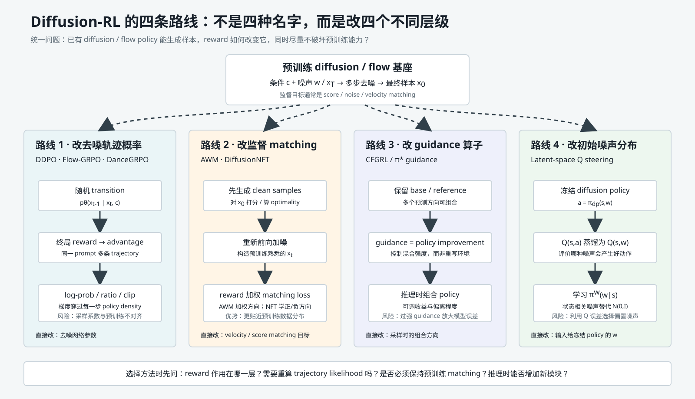
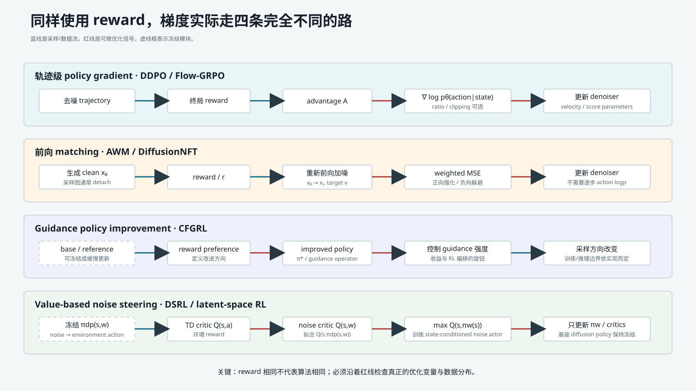
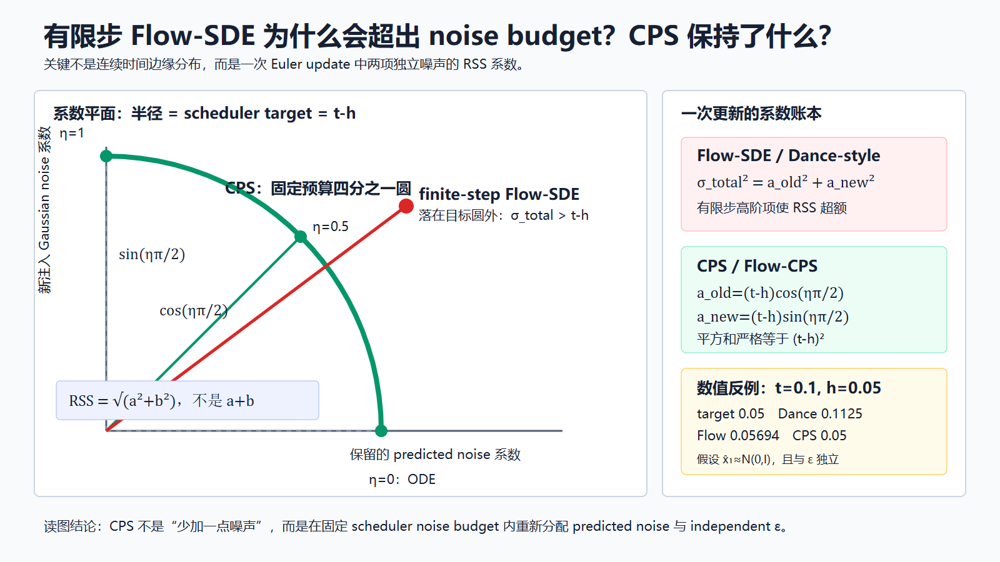
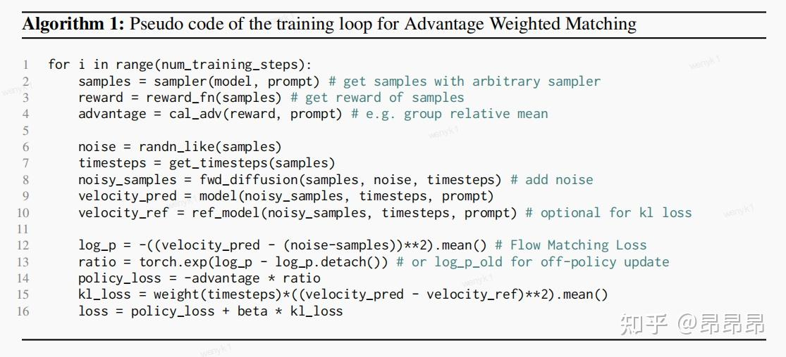
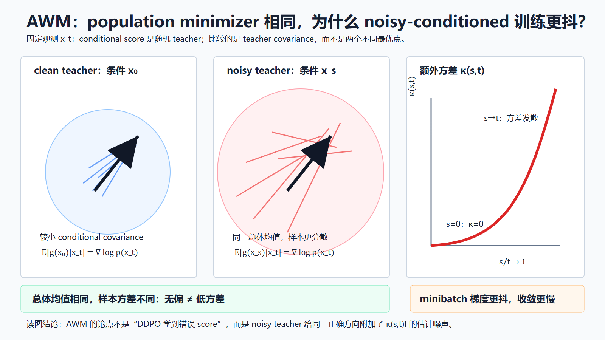
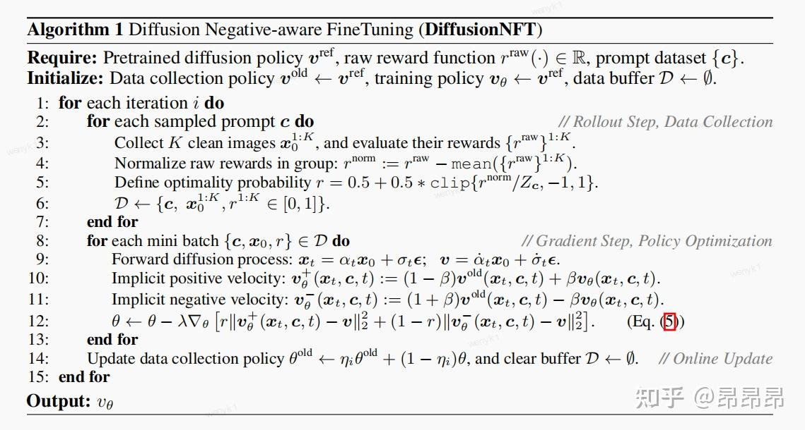
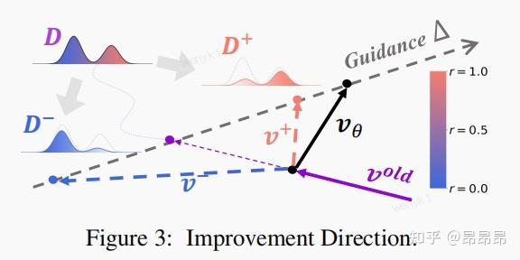
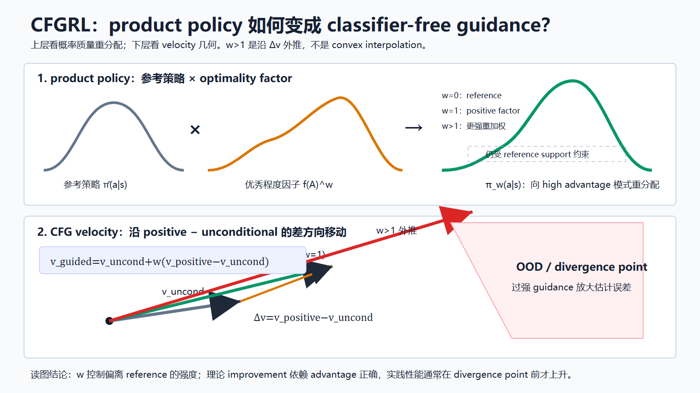
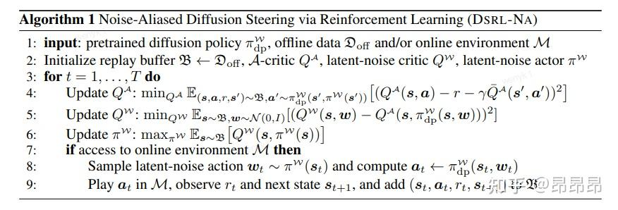
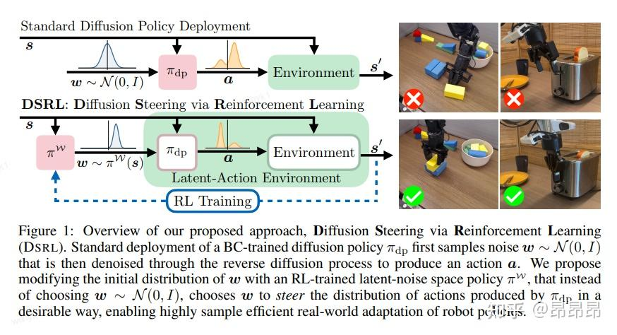

先给结论：四类方法真正不同的是“reward 改了系统的哪一层”
这篇博客把近年的 Diffusion-RL 工作分成四类，这个分类方向是对的，但还可以再精确一步。它们并不是给同一个目标函数换了四种名字，而是在生成系统的四个不同位置接入 reward：
轨迹级 policy gradient ：把每个 denoising transition 看成 action，reward 通过每一步 log-prob 回到 denoiser。代表：DDPO、Flow-GRPO、DanceGRPO。前向过程 weighted matching ：先生成完整样本并评分，再把这些样本重新加噪，回到预训练熟悉的 score/velocity matching 目标上做 reward 加权。代表：AWM、DiffusionNFT。Guidance policy improvement ：先学习 reference distribution 与“更优样本”条件分布，再在采样时用 classifier-free guidance 合成一个更偏向高价值区域的 policy。代表：CFGRL。初始噪声 value steering ：完全冻结 diffusion policy，把初始噪声当成新的 RL action，学习当前状态应该选择哪一个噪声。代表：DSRL / latent-space reinforcement learning。

图 T04-F01 · 本报告解释性技术图。四条路线共享预训练 diffusion/flow 基座，但分别修改 transition likelihood、matching objective、guidance operator 和 initial-noise distribution。 白话类比：把 diffusion policy 想象成一辆能从“随机种子”一路开到“最终动作/图片”的车。
路线 1 改的是驾驶过程中的每一次方向盘操作，并根据最终成绩给整段驾驶过程记功。
路线 2 不直接复盘每次方向盘，而是把最终好结果拿回来，重新做一次标准驾驶训练，好结果权重大、坏结果权重小或反向。
路线 3 保留原驾驶员，再训练一个“更优秀行为”的条件分支，部署时通过 guidance 旋钮混合两者。
路线 4 连驾驶员都不改，只训练一个选种子的人：针对当前场景挑一个更容易让原驾驶员做出好动作的初始噪声。
因此，看到一个新的 Diffusion-RL 方法时，第一问不应该是“它属于 PPO、DPO 还是 Q-learning”，而应该是：reward 最终乘在 log-prob、matching loss、guidance factor，还是 value function 上？
一张统一比较表
维度 轨迹级 RL 前向 matching Guidance improvement Noise-space value RL 代表方法 DDPO、Flow-GRPO、DanceGRPO AWM、DiffusionNFT CFGRL DSRL RL action 下一步 latent / denoising transition 通常不显式定义逐步 action 原动作分布中的高最优性因子 初始噪声 w w w reward 进入点 advantage × step log-prob advantage/optimality × matching loss optimality condition + guidance Bellman target → Q A Q_A Q A Q W Q_W Q W 是否需要完整反向轨迹 likelihood 是 否 否 否 是否更新基础 denoiser 是 是 训练 conditional generative policy 否，基础 policy 冻结 与预训练目标关系 容易因 sampler/系数产生 mismatch 主动回到标准 forward noising/matching 训练仍是 conditional generative modeling 不改变预训练目标 Reference/old 的作用 old ratio、KL 或 rollout policy regularization、正负方向 anchor prior / unconditional branch 冻结的 w ↦ a w\mapsto a w ↦ a 推理变化 通常直接使用更新后的 denoiser 使用更新后的 denoiser 多跑 conditional/unconditional 分支并 guidance 先由 noise actor 选 w w w 主要风险 高方差、credit assignment、系数不一致 reward hacking、负权重不稳定 guidance 过强、条件标签错误 critic 误差、越出噪声训练分布
读公式时必须统一的符号
不同论文对时间、噪声和 velocity 使用不同字母。为了避免“符号看起来相同，实际指不同对象”，T04 统一采用：
符号 统一含义 c c c 条件，例如 prompt、状态或任务描述 x 0 x_0 x 0 最终 clean sample；图像或动作序列 x t x_t x t 在噪声时刻 t t t w w w ϵ \epsilon ϵ 初始或局部标准 Gaussian 噪声 v θ ( x t , c , t ) v_\theta(x_t,c,t) v θ ( x t , c , t ) 当前 flow/velocity 网络输出 v o l d v^{old} v o l d 数据收集 old policy 的输出，不能自动等同 fixed reference R R R 最终样本或环境 trajectory 的 reward A A A 相对 baseline 的 advantage r t ( θ ) r_t(\theta) r t ( θ ) 在 PPO/GRPO 语境中通常是 current/old probability ratio r ∈ [ 0 , 1 ] r\in[0,1] r ∈ [ 0 , 1 ] 在 DiffusionNFT 中是 optimality soft label，和 ratio 不是同一个 r r r Q A ( s , a ) Q_A(s,a) Q A ( s , a ) 原动作空间 action critic Q W ( s , w ) Q_W(s,w) Q W ( s , w ) 初始噪声空间 critic
尤其要警惕三个同名冲突：
r r r β \beta β “old model”可能是 rollout policy、EMA model；“reference model”通常是固定预训练模型，两者不一定相同。
梯度到底走哪条路

图 T04-F02 · 本报告解释性技术图。蓝线表示采样或数据流，红线表示真正接收梯度的路径，虚线框表示冻结模块。 从可微计算图看，四类方法的区别比名称更清晰。
轨迹级 policy gradient
T04 公式 1
∇ θ J = E [ ∑ t A t ∇ θ log p θ ( x t − 1 ∣ x t , c ) ] . \nabla_\theta J
=\mathbb E\left[\sum_t A_t\nabla_\theta\log p_\theta(x_{t-1}\mid x_t,c)\right]. ∇ θ J = E [ t ∑ A t ∇ θ log p θ ( x t − 1 ∣ x t , c ) ] . 采样出的 x t − 1 x_{t-1} x t − 1
前向 weighted matching
T04 公式 2
∇ θ J ≈ E [ A ( x 0 , c ) ∇ θ ℓ m a t c h ( v θ ( x t , c , t ) , v t a r g e t ) ] . \nabla_\theta J
\approx \mathbb E\left[A(x_0,c)\nabla_\theta\ell_{match}(v_\theta(x_t,c,t),v_{target})\right]. ∇ θ J ≈ E [ A ( x 0 , c ) ∇ θ ℓ ma t c h ( v θ ( x t , c , t ) , v t a r g e t ) ] . 生成的 x 0 x_0 x 0 x t x_t x t
Guidance policy improvement
先定义一个偏好高价值动作的 product policy：
T04 公式 3
π ∗ ( a ∣ s ) ∝ π r e f ( a ∣ s ) g ( s , a ) , \pi^*(a\mid s)\propto \pi_{ref}(a\mid s)\,g(s,a), π ∗ ( a ∣ s ) ∝ π re f ( a ∣ s ) g ( s , a ) , 再通过 conditional/unconditional generative prediction 的组合来近似从该分布采样。Guidance weight 控制 g g g
Noise-space value RL
T04 公式 4
a = π d p ( s , w ) , Q W ( s , w ) ≈ Q A ( s , π d p ( s , w ) ) , a=\pi_{dp}(s,w),\qquad
Q_W(s,w)\approx Q_A(s,\pi_{dp}(s,w)), a = π d p ( s , w ) , Q W ( s , w ) ≈ Q A ( s , π d p ( s , w )) , T04 公式 5
max π W E w ∼ π W ( ⋅ ∣ s ) Q W ( s , w ) . \max_{\pi_W}\mathbb E_{w\sim\pi_W(\cdot\mid s)}Q_W(s,w). π W max E w ∼ π W ( ⋅ ∣ s ) Q W ( s , w ) . 基础 diffusion policy π d p \pi_{dp} π d p
“与预训练对齐”到底是什么意思
博客多次提到某些 RL 目标与监督预训练不一致。这个说法不能只看 loss 名称，需要同时检查三件事：
训练输入分布是否一致 ：网络看到的是标准 forward process 产生的 x t x_t x t 监督 target 是否一致 ：target 是 clean-conditioned score/velocity，还是根据相邻 noisy state 推导的 target？系数是否一致 ：同一个 timestep 的 clean coefficient 与 noise coefficient 是否仍满足原 scheduler 定义？
轨迹级 RL 可能在理论上拥有正确 population direction，却因为 noisy target、离散 sampler 或系数 RSS 产生更大的 gradient variance。AWM 的重要贡献不是简单声称 DDPO“学错了”，而是把问题精确化为：DDPO 单步 target 与 clean target 可以有相同 population minimizer，但 noisy conditioning 额外增加 covariance，导致有限 batch SGD 更难。
因此最终报告会把下面三种情况分开：
目标最优解真的改变 ；最优解相同，但估计方差更大 ；有限步离散系数使实际训练分布偏离理论分布 。
把三者都叫“mismatch”会掩盖不同修复手段。
深入理解必须经过的五个反例
反例 1：同组 reward 完全相同
若同一个 prompt 的 rewards 是 [ 1 , 1 , 1 , 1 ] [1,1,1,1] [ 1 , 1 , 1 , 1 ]
反例 2：reward 本身有漏洞
更低方差、更强 guidance 或更高效 matching 只会更快利用 reward。它们不会自动修复 OCR 重复字符、审美模型偏见或 simulator loophole。算法稳定不等于目标正确。
反例 3：guidance 越大越好
如果最优性条件估计有误，guidance 会同时放大错误因子。理论上的单调 policy improvement 依赖准确的 optimality factor 和分布支持；真实模型在过强 guidance 下可能离开训练分布。
反例 4：冻结基础 policy 就有性能下限
冻结只保证原 checkpoint 可恢复，不保证新的 noise actor 一定选择安全噪声。如果 Q W Q_W Q W
反例 5：基础 policy 没有目标行为
Noise steering 只能从冻结 policy 已有的支持集中选模式。如果基础 policy 从未学会“先后退再绕障”，再聪明的噪声 actor 也无法凭空创造这个动作模式。
如何选择：先看约束，不先看论文分数
已经能获得逐步 transition likelihood，且希望直接在线优化 denoiser：从 DDPO/Flow-GRPO 路线开始。
逐步 likelihood 昂贵或 sampler 特殊，希望继续使用预训练 matching pipeline：优先考察 AWM/DiffusionNFT。
希望测试时可调 reward 强度，并能训练 optimality-conditioned/unconditional 分支：考察 CFGRL。
基础 diffusion policy 很大、不能微调，但动作多样性已经存在，只需针对状态挑选模式：考察 DSRL。
Reward 很稀疏且需要长期环境交互：value-based noise steering 可能比只用终局图像 reward 更自然，但 critic bias 会成为主风险。
后续各节会按博客顺序进入细节，但始终回到这套统一坐标：改什么、梯度走哪里、是否对齐预训练、推理改变什么、最容易在哪个反例上失败。
方法族一：把整条降噪链变成可优化的策略
DDPO、Flow-GRPO、DanceGRPO 和 Coefficients-Preserving Sampling（CPS）经常被并列介绍，因为它们都围绕“多步生成过程如何接入强化学习”展开。但四者并不是同一算法的四个名字：DDPO 首先把扩散反向过程写成多步 MDP；Flow-GRPO 为原本确定性的 flow ODE 构造可采样、可计算概率的 SDE；DanceGRPO 把这套 GRPO 训练扩展到图像、视频、diffusion 与 rectified flow，并加入组内共享初始噪声、多奖励和 timestep 子采样；CPS 则指出前两类 flow SDE 在有限步离散时破坏了预训练 scheduler 的信号/噪声系数，并改造 sampler。
理解这一族方法的关键不是记住四个缩写，而是回答四个问题：一次生成中的 state 和 action 是什么？随机探索在哪里发生？终局 reward 怎样变成网络梯度？训练时引入的 stochastic sampler 与推理时的生成分布是否一致？
1. 统一 MDP：为什么“下一张 latent”可以是动作
给定条件 (c)，例如文本 prompt、输入图像或场景特征，一次生成得到轨迹
T04 公式 6
τ = ( x T , x T − 1 , … , x 0 ) , \tau=(x_T,x_{T-1},\ldots,x_0), τ = ( x T , x T − 1 , … , x 0 ) , 其中 x T ∼ N ( 0 , I ) x_T\sim\mathcal N(0,I) x T ∼ N ( 0 , I ) x 0 x_0 x 0
T04 公式 7
s t = ( c , t , x t ) , a t = x t − 1 , s_t=(c,t,x_t),\qquad a_t=x_{t-1}, s t = ( c , t , x t ) , a t = x t − 1 , T04 公式 8
π θ ( a t ∣ s t ) = p θ ( x t − 1 ∣ x t , c ) . \pi_\theta(a_t\mid s_t)
=p_\theta(x_{t-1}\mid x_t,c). π θ ( a t ∣ s t ) = p θ ( x t − 1 ∣ x t , c ) . 这里的“动作”不是机械臂控制量，而是从当前 noisy latent x t x_t x t x t − 1 x_{t-1} x t − 1 t t t t − 1 t-1 t − 1 [ C , H , W ] [C,H,W] [ C , H , W ] x t x_t x t x t − 1 x_{t-1} x t − 1
reward 通常只在最终结果上计算：
T04 公式 9
R ( s t , a t ) = { r ( x 0 , c ) , t = 0 , 0 , 其他时刻 . R(s_t,a_t)=
\begin{cases}
r(x_0,c),&t=0,\\
0,&\text{其他时刻}.
\end{cases} R ( s t , a t ) = { r ( x 0 , c ) , 0 , t = 0 , 其他时刻 . 因此每条轨迹只有一个终局 reward。轨迹概率可分解为
T04 公式 10
p θ ( τ ∣ c ) = p ( x T ) ∏ t = 1 T p θ ( x t − 1 ∣ x t , c ) , p_\theta(\tau\mid c)=p(x_T)\prod_{t=1}^{T}
p_\theta(x_{t-1}\mid x_t,c), p θ ( τ ∣ c ) = p ( x T ) t = 1 ∏ T p θ ( x t − 1 ∣ x t , c ) , 于是
T04 公式 11
∇ θ log p θ ( τ ∣ c ) = ∑ t = 1 T ∇ θ log p θ ( x t − 1 ∣ x t , c ) . \nabla_\theta\log p_\theta(\tau\mid c)
=\sum_{t=1}^{T}\nabla_\theta
\log p_\theta(x_{t-1}\mid x_t,c). ∇ θ log p θ ( τ ∣ c ) = t = 1 ∑ T ∇ θ log p θ ( x t − 1 ∣ x t , c ) . 这一步解释了整类方法的梯度路径：rollout 产生的 x t − 1 x_{t-1} x t − 1
rollout policy -> x_T ... x_0 -> terminal reward
-> advantage（stop-gradient）
current policy -> transition mean/log-prob -> ratio/clipping -> theta
old/reference policy ------------------------ stop-gradient这也揭示一个前提：每一步必须有可计算的随机转移密度。严格确定性的 ODE 只给出 Dirac delta；它虽然能靠不同初始噪声生成不同结果，却不能直接提供普通 PPO 所需的有限方差 transition log-prob。Flow-GRPO 和 DanceGRPO 显式构造 SDE，正是为了补上这一环。
2. DDPO：从单次 REINFORCE 到可重复利用 rollout 的 PPO
DDPO 的目标很直接：
T04 公式 12
J ( θ ) = E c , x 0 ∼ p θ [ r ( x 0 , c ) ] . J(\theta)=\mathbb E_{c,x_0\sim p_\theta}
[r(x_0,c)]. J ( θ ) = E c , x 0 ∼ p θ [ r ( x 0 , c )] . 第一种估计器 D D P O S F \mathrm{DDPO}_{\mathrm{SF}} DDPO SF
T04 公式 13
∇ θ J = E [ ∑ t = 1 T ∇ θ log p θ ( x t − 1 ∣ x t , c ) r ( x 0 , c ) ] . \nabla_\theta J
=\mathbb E\left[
\sum_{t=1}^{T}
\nabla_\theta\log p_\theta(x_{t-1}\mid x_t,c)
r(x_0,c)
\right]. ∇ θ J = E [ t = 1 ∑ T ∇ θ log p θ ( x t − 1 ∣ x t , c ) r ( x 0 , c ) ] . 博客展示的式子只写了一个 (t) 的 ∇ log p θ r \nabla\log p_\theta\,r ∇ log p θ r
D D P O S F \mathrm{DDPO}_{\mathrm{SF}} DDPO SF D D P O I S \mathrm{DDPO}_{\mathrm{IS}} DDPO IS
T04 公式 14
ρ t ( θ ) = p θ ( x t − 1 ∣ x t , c ) p θ o l d ( x t − 1 ∣ x t , c ) , \rho_t(\theta)=
\frac{p_\theta(x_{t-1}\mid x_t,c)}
{p_{\theta_{old}}(x_{t-1}\mid x_t,c)}, ρ t ( θ ) = p θ o l d ( x t − 1 ∣ x t , c ) p θ ( x t − 1 ∣ x t , c ) , 并采用 PPO-style clipped surrogate：
T04 公式 15
L t = − min ( ρ t A , clip ( ρ t , 1 − ϵ , 1 + ϵ ) A ) . L_t=-\min\left(
\rho_t A,
\operatorname{clip}(\rho_t,1-\epsilon,1+\epsilon)A
\right). L t = − min ( ρ t A , clip ( ρ t , 1 − ϵ , 1 + ϵ ) A ) . 若 A > 0 A>0 A > 0 1 + ϵ 1+\epsilon 1 + ϵ A < 0 A<0 A < 0
T04 公式 16
ρ t = exp ( log p θ − log p o l d ) . \rho_t=\exp(\log p_\theta-\log p_{old}). ρ t = exp ( log p θ − log p o l d ) . 梯度只进入当前 UNet 或 LoRA；old policy、reward、VAE 和通常冻结的 text encoder 都不接收梯度。DDPO 论文实验使用过 10 − 4 10^{-4} 1 0 − 4
DDPO 的训练流程是“完整生成—评分—重算若干步 log-prob—更新”；推理时只保留微调后的 denoiser，照常运行扩散 sampler，不再需要 reward model、old policy 或 PPO loss。其主要风险不是推理变慢，而是 reward hacking。论文观察到，优化“不可压缩性”最终会生成高频噪声；优化 VLM 的对象数量判断时，模型可能在图像中画出类似数字的文字，骗过评分器却没有真正画对数量。这说明 clipping 约束更新幅度，并不能保证 reward 本身代表人类真正想要的质量。
3. Flow-GRPO：为确定性 Flow-ODE 构造 Gaussian policy
rectified flow 原本按照 ODE 生成：
T04 公式 17
d x t = v θ ( x t , t , c ) d t . \mathrm d x_t=v_\theta(x_t,t,c)\,\mathrm dt. d x t = v θ ( x t , t , c ) d t . 给定同一个 x t x_t x t
T04 公式 18
d x t = [ v θ ( x t , t , c ) + σ t 2 2 t ( x t + ( 1 − t ) v θ ( x t , t , c ) ) ] d t + σ t d W t . \mathrm d x_t=
\left[
v_\theta(x_t,t,c)
+\frac{\sigma_t^2}{2t}
\bigl(x_t+(1-t)v_\theta(x_t,t,c)\bigr)
\right]\,\mathrm dt
+\sigma_t\,\mathrm dW_t. d x t = [ v θ ( x t , t , c ) + 2 t σ t 2 ( x t + ( 1 − t ) v θ ( x t , t , c ) ) ] d t + σ t d W t . v θ v_\theta v θ W t W_t W t σ t \sigma_t σ t
T04 公式 19
σ t = a t 1 − t , \sigma_t=a\sqrt{\frac{t}{1-t}}, σ t = a 1 − t t , 其中 a a a
这里必须修正博客公式容易造成的时间符号歧义。生成沿 t : 1 → 0 t:1\to0 t : 1 → 0 h > 0 h>0 h > 0 t t t t − h t-h t − h
T04 公式 20
x t − h = x t − [ v θ + σ t 2 2 t ( x t + ( 1 − t ) v θ ) ] h + σ t h ϵ , ϵ ∼ N ( 0 , I ) . x_{t-h}=x_t-
\left[
v_\theta+\frac{\sigma_t^2}{2t}
\bigl(x_t+(1-t)v_\theta\bigr)
\right]h
+\sigma_t\sqrt h\epsilon,
\quad\epsilon\sim\mathcal N(0,I). x t − h = x t − [ v θ + 2 t σ t 2 ( x t + ( 1 − t ) v θ ) ] h + σ t h ϵ , ϵ ∼ N ( 0 , I ) . 若继续使用 signed Δ t = − h \Delta t=-h Δ t = − h − Δ t \sqrt{-\Delta t} − Δ t σ t 2 ∣ Δ t ∣ \sigma_t^2|\Delta t| σ t 2 ∣Δ t ∣ dt = prev_timestep - timestep < 0，再使用 sqrt(-dt)。直接把负的 Δ t \Delta t Δ t Δ t \sqrt{\Delta t} Δ t
定义一步均值
T04 公式 21
μ θ = x t + [ v θ + σ t 2 2 t ( x t + ( 1 − t ) v θ ) ] Δ t , \mu_\theta=x_t+
\left[
v_\theta+\frac{\sigma_t^2}{2t}
\bigl(x_t+(1-t)v_\theta\bigr)
\right]\Delta t, μ θ = x t + [ v θ + 2 t σ t 2 ( x t + ( 1 − t ) v θ ) ] Δ t , 则 transition policy 是
T04 公式 22
π θ ( x t + Δ t ∣ x t , c ) = N ( μ θ , σ t 2 ∣ Δ t ∣ I ) . \pi_\theta(x_{t+\Delta t}\mid x_t,c)
=\mathcal N\left(\mu_\theta,
\sigma_t^2|\Delta t|I\right). π θ ( x t + Δ t ∣ x t , c ) = N ( μ θ , σ t 2 ∣Δ t ∣ I ) . 例如 t = 0.5 , h = 0.1 , a = 0.5 t=0.5,h=0.1,a=0.5 t = 0.5 , h = 0.1 , a = 0.5 σ t = 0.5 \sigma_t=0.5 σ t = 0.5 0.5 2 × 0.1 = 0.025 0.5^2\times0.1=0.025 0. 5 2 × 0.1 = 0.025
Flow-GRPO 对同一 prompt 生成 (G) 个结果，以组内 reward 得到
T04 公式 23
A ^ i = r i − mean ( r 1 , … , r G ) std ( r 1 , … , r G ) + δ , \hat A_i=
\frac{r_i-\operatorname{mean}(r_1,\ldots,r_G)}
{\operatorname{std}(r_1,\ldots,r_G)+\delta}, A ^ i = std ( r 1 , … , r G ) + δ r i − mean ( r 1 , … , r G ) , 并把同一个 A ^ i \hat A_i A ^ i
T04 公式 24
J = E [ 1 G ∑ i 1 T ∑ t ( min ( ρ t , i A ^ i , clip ( ρ t , i , 1 − ϵ , 1 + ϵ ) A ^ i ) − β D K L ( π θ ∥ π r e f ) ) ] . J=\mathbb E\left[
\frac1G\sum_i\frac1T\sum_t
\left(
\min(\rho_{t,i}\hat A_i,
\operatorname{clip}(\rho_{t,i},1-\epsilon,1+\epsilon)
\hat A_i)
-\beta D_{KL}(\pi_\theta\Vert\pi_{ref})
\right)
\right]. J = E [ G 1 i ∑ T 1 t ∑ ( min ( ρ t , i A ^ i , clip ( ρ t , i , 1 − ϵ , 1 + ϵ ) A ^ i ) − β D K L ( π θ ∥ π re f ) ) ] . old policy 与 reference policy 不能混为一谈。old policy 是收集当前 batch 的参数快照，出现在 importance ratio 的分母；reference policy 通常是冻结的预训练模型，用来限制 reward 优化造成的分布漂移。二者 covariance 相同、均值不同，因此 reference KL 可闭式写为
T04 公式 25
D K L = ∥ μ θ − μ r e f ∥ 2 2 σ t 2 h = h 2 ( σ t ( 1 − t ) 2 t + 1 σ t ) 2 ∥ v θ − v r e f ∥ 2 . D_{KL}=
\frac{\|\mu_\theta-\mu_{ref}\|^2}
{2\sigma_t^2h}
=\frac h2
\left(
\frac{\sigma_t(1-t)}{2t}+\frac1{\sigma_t}
\right)^2
\|v_\theta-v_{ref}\|^2. D K L = 2 σ t 2 h ∥ μ θ − μ re f ∥ 2 = 2 h ( 2 t σ t ( 1 − t ) + σ t 1 ) 2 ∥ v θ − v re f ∥ 2 . reference 分支停止梯度，当前分支经 μ θ → v θ \mu_\theta\to v_\theta μ θ → v θ σ t → 0 \sigma_t\to0 σ t → 0 1 / σ t 1/\sigma_t 1/ σ t
Flow-GRPO 论文还区分训练与推理步数：SD3.5-M 的 RL rollout 可只用 10 步，推理恢复默认 40 步。推理不需要 SDE log-prob、old/reference 模型或 reward；可以使用训练后模型的常规 ODE sampler。T02 已详细解释 SDE 公式，T03 已对固定代码路径做过审计，但这里的核心结论自洽：SDE 是训练时建立 stochastic policy 的工具，不意味着部署必须永久携带 RL 训练栈。
4. DanceGRPO：真实贡献不是“根据收敛自动调噪”
DanceGRPO 沿用相同 MDP 和 clipped GRPO 目标，并把它扩展到 diffusion、rectified flow、图像和视频。它的组内 advantage 仍由最终 reward 得到；多 reward 时，不直接相加不同量纲的分数，而是先分别标准化：
T04 公式 26
A i = ∑ k = 1 K r i k − μ k σ k . A_i=\sum_{k=1}^{K}
\frac{r_i^k-\mu^k}{\sigma^k}. A i = k = 1 ∑ K σ k r i k − μ k . 论文中的实际设计包括四点。第一，同一 prompt 的组内样本共享初始 Gaussian noise，让样本差异更多来自后续 stochastic transition，而不是完全不同的初始构图；第二，随机选择部分 timestep 训练，降低计算量；第三，组合多个 reward advantage，避免单一审美模型把图像推向“油腻”或不真实风格；第四，可利用 Best-of-N 的 top/bottom 候选增强有效对比。
共享初始噪声不等于共享所有噪声。若 sampler 也完全确定，那么同 prompt 的 (G) 个输出会相同，reward 标准差为零，advantage 与梯度一起退化。DanceGRPO 仍依赖独立的过程噪声产生组内探索。
博客说 DanceGRPO “根据任务和收敛情况动态改变噪声注入强度”，这一说法超出一手来源。论文确实系统消融了 ε t \varepsilon_t ε t ε t \varepsilon_t ε t eta 作为固定超参数。准确说法应是：DanceGRPO 认识到噪声水平需要按任务、模型和 sampler 调参，并用共享初始噪声、timestep dropout 和多 reward 提高稳定性；它不是在线自适应调噪算法。
DanceGRPO 还默认可以不加 reference KL，因为作者在其实验中观察到差异有限。这再次说明“这一族方法都必须有 reference model”并不准确：old policy 对 ratio 是必需角色，reference regularizer 则是可选的防漂移手段。
5. CPS：连续时间边缘正确，不代表有限步系数正确
CPS 从 flow 的线性插值结构出发。由当前 latent 与 velocity 可重建
T04 公式 27
x ^ 0 = x t − t v ^ , x ^ 1 = x t + ( 1 − t ) v ^ , \hat x_0=x_t-t\hat v,\qquad
\hat x_1=x_t+(1-t)\hat v, x ^ 0 = x t − t v ^ , x ^ 1 = x t + ( 1 − t ) v ^ , 其中 x ^ 0 \hat x_0 x ^ 0 x ^ 1 \hat x_1 x ^ 1
T04 公式 28
x t − h = ( 1 − ( t − h ) ) x ^ 0 + ( t − h ) x ^ 1 . x_{t-h}=(1-(t-h))\hat x_0+(t-h)\hat x_1. x t − h = ( 1 − ( t − h )) x ^ 0 + ( t − h ) x ^ 1 . 也就是说，scheduler 在目标时刻 (t-h) 要求 sample coefficient 是 (1-(t-h))，noise level 是 (t-h)。CPS 定义“系数保持”包含两个条件：sample coefficient 必须严格等于 scheduler 分配值；若有多个相互独立的噪声项，其标准差的 root-sum-square（RSS）必须等于 scheduler 的目标 noise level。
把 Flow-SDE 的离散更新按 x ^ 0 , x ^ 1 \hat x_0,\hat x_1 x ^ 0 , x ^ 1
T04 公式 29
x t − h = ( 1 − ( t − h ) ) x ^ 0 + ( t − h − σ t 2 h 2 t ) x ^ 1 + σ t h ϵ . x_{t-h}=(1-(t-h))\hat x_0
+\left(t-h-\frac{\sigma_t^2h}{2t}\right)
\hat x_1
+\sigma_t\sqrt h\epsilon. x t − h = ( 1 − ( t − h )) x ^ 0 + ( t − h − 2 t σ t 2 h ) x ^ 1 + σ t h ϵ . 若预测噪声与新 Gaussian 噪声独立，总噪声水平为
T04 公式 30
σ t o t a l = ( t − h − σ t 2 h 2 t ) 2 + σ t 2 h , \sigma_{total}=
\sqrt{
\left(t-h-\frac{\sigma_t^2h}{2t}\right)^2
+\sigma_t^2h
}, σ t o t a l = ( t − h − 2 t σ t 2 h ) 2 + σ t 2 h , 整理后得到
T04 公式 31
σ t o t a l = ( t − h ) 2 + ( σ t h ) 2 t + ( σ t 2 h 2 t ) 2 ≥ t − h . \sigma_{total}=
\sqrt{
(t-h)^2
+\frac{(\sigma_t h)^2}{t}
+\left(\frac{\sigma_t^2h}{2t}\right)^2
}
\ge t-h. σ t o t a l = ( t − h ) 2 + t ( σ t h ) 2 + ( 2 t σ t 2 h ) 2 ≥ t − h . 只要 σ t > 0 \sigma_t>0 σ t > 0 σ t = η \sigma_t=\eta σ t = η 1 / t 1/t 1/ t t → 0 t\to0 t → 0 η t / ( 1 − t ) \eta\sqrt{t/(1-t)} η t / ( 1 − t ) t → 1 t\to1 t → 1
取 t = 0.1 , h = 0.05 t=0.1,h=0.05 t = 0.1 , h = 0.05 σ = 0.5 \sigma=0.5 σ = 0.5
T04 公式 32
σ t o t a l = 0.1125 , \sigma_{total}=0.1125, σ t o t a l = 0.1125 , 比目标高 125%；Flow 式 σ = 0.5 0.1 / 0.9 = 0.1667 \sigma=0.5\sqrt{0.1/0.9}=0.1667 σ = 0.5 0.1/0.9 = 0.1667 σ t o t a l ≈ 0.05694 \sigma_{\mathrm{total}}\approx0.05694 σ total ≈ 0.05694
CPS 不再先减去一个与新噪声幅度不匹配的预测噪声项，而是直接在固定 noise budget 内分配两类噪声：
T04 公式 33
x t − h = ( 1 − ( t − h ) ) x ^ 0 + ( t − h ) 2 − σ t 2 x ^ 1 + σ t ϵ . x_{t-h}=(1-(t-h))\hat x_0
+\sqrt{(t-h)^2-\sigma_t^2}\hat x_1
+\sigma_t\epsilon. x t − h = ( 1 − ( t − h )) x ^ 0 + ( t − h ) 2 − σ t 2 x ^ 1 + σ t ϵ . 令
T04 公式 34
σ t = ( t − h ) sin ( η π 2 ) , \sigma_t=(t-h)\sin\left(\frac{\eta\pi}{2}\right), σ t = ( t − h ) sin ( 2 η π ) , 得到 Flow-CPS 更新：
T04 公式 35
x t − h = ( 1 − ( t − h ) ) x ^ 0 + ( t − h ) cos ( η π 2 ) x ^ 1 + ( t − h ) sin ( η π 2 ) ϵ . x_{t-h}=(1-(t-h))\hat x_0
+(t-h)\cos\left(\frac{\eta\pi}{2}\right)
\hat x_1
+(t-h)\sin\left(\frac{\eta\pi}{2}\right)
\epsilon. x t − h = ( 1 − ( t − h )) x ^ 0 + ( t − h ) cos ( 2 η π ) x ^ 1 + ( t − h ) sin ( 2 η π ) ϵ . 两个噪声项的 RSS 恒为
T04 公式 36
( t − h ) cos 2 ( η π / 2 ) + sin 2 ( η π / 2 ) = t − h . (t-h)\sqrt{\cos^2(\eta\pi/2)+
\sin^2(\eta\pi/2)}=t-h. ( t − h ) cos 2 ( η π /2 ) + sin 2 ( η π /2 ) = t − h . 在刚才的数值例中取 η = 0.5 \eta=0.5 η = 0.5 η = 0 \eta=0 η = 0 η = 1 \eta=1 η = 1

图 T04-F03 · image_gen 构图、报告内重建的科研说明图。CPS 在固定 noise budget 内重新分配 predicted noise 与 independent Gaussian noise。 CPS 还有一个容易被忽略的限制。若条件均值为
T04 公式 37
μ θ = ( 1 − ( t − h ) ) x ^ 0 , θ + ( t − h ) cos ( η π / 2 ) x ^ 1 , θ , \mu_\theta=(1-(t-h))\hat x_{0,\theta}
+(t-h)\cos(\eta\pi/2)\hat x_{1,\theta}, μ θ = ( 1 − ( t − h )) x ^ 0 , θ + ( t − h ) cos ( η π /2 ) x ^ 1 , θ , 严格 Gaussian log-density 应包含
T04 公式 38
− ∥ x t − h − μ θ ∥ 2 2 σ t 2 − log σ t − log 2 π . -\frac{\|x_{t-h}-\mu_\theta\|^2}{2\sigma_t^2}
-\log\sigma_t-\log\sqrt{2\pi}. − 2 σ t 2 ∥ x t − h − μ θ ∥ 2 − log σ t − log 2 π . 但 CPS 论文 Eq. (15) 为避免最后几步 σ t → 0 \sigma_t\to0 σ t → 0
T04 公式 39
log p θ ~ = − ∥ x t − h − μ θ ∥ 2 . \widetilde{\log p_\theta}
=-\|x_{t-h}-\mu_\theta\|^2. log p θ = − ∥ x t − h − μ θ ∥ 2 . 删除 − log σ t -\log\sigma_t − log σ t 1 / ( 2 σ t 2 ) 1/(2\sigma_t^2) 1/ ( 2 σ t 2 )
CPS 修正系数后仍可能失败。其论文报告低 η \eta η
6. 训练、推理与方法选择
四者训练时都可能需要完整或部分 trajectory、old log-prob、终局 reward 和 advantage；推理时通常只保留训练后的生成模型与所选 sampler。DDPO 适合原生 diffusion transition，概念最直接，reward 可不可微，但高维 ratio 敏感且容易 reward overoptimization。Flow-GRPO 适合 flow matching 模型，需要通过 SDE 建立 stochastic policy，并承担噪声超参数、signed timestep 和有限步离散误差。DanceGRPO 更像一套面向大规模视觉生成的工程化 GRPO 框架：共享初始噪声、多 reward、timestep 子采样和视频支持是它的重点，不应误读为自动噪声控制器。CPS 适合已经采用 Flow-GRPO/DanceGRPO、又发现 rollout 出现噪声伪影或少步 sampler 偏离 scheduler 的场景；它可作为 sampler 插件，但 Eq. (15) 的 surrogate 权重需要明确记录。
选择问题 更合适的起点 现有模型是 diffusion，想直接优化不可微终局 reward DDPO / DDPO-style PPO 现有模型是 rectified flow，需要在线 GRPO Flow-GRPO 要扩展到多 reward、视频和大规模组采样 DanceGRPO 框架 Flow-SDE 少步采样出现噪声伪影或系数偏差 CPS / Flow-CPS reward 很容易被钻空子 四者都不能单独解决；需改 reward、加入多指标/约束或 early stopping 部署不允许 reward 模型或 reference 模型 四者训练完成后通常都可移除这些组件
最后可以用一句话区分它们：DDPO 证明“降噪 transition 可以当 policy”；Flow-GRPO 让确定性 flow transition 变成可探索、可算 likelihood 的 policy；DanceGRPO 扩展并稳定这套训练范式；CPS 则追问这个 stochastic policy 在有限步数下是否仍尊重预训练时的 signal/noise 坐标。把这四层问题分开，才能避免把“有随机性”“概率可算”“系数正确”和“reward 优化稳定”误认为同一件事。
7. 从公式到直觉：一条轨迹究竟怎样产生梯度
可以把生成模型想成一名连续修改草稿的画师。当前草稿是 state，下一版草稿是 action，最后成画后才得到评委分数。普通监督学习会告诉画师每一笔应该临摹什么；这里没有逐笔标签，只有整幅画的总分。策略梯度所做的，是回看高分画作的全部修改记录，提高这些修改再次发生的概率；对低分画作则反向处理。它并不知道某个具体 timestep 是功臣还是罪魁，只能先把同一个终局评价分配给整条链。这种 credit assignment 很粗，却不需要额外训练一个与生成模型同等规模的 value model。
一次实现中的数据流可以拆成两个阶段。rollout 阶段用 old policy 从初始噪声开始生成，保存每个时刻的当前 latent、实际采样出的下一 latent、old log-prob 和最终图像。评分阶段把最终图像交给 reward 模型，再按 prompt 或组计算 advantage。训练阶段不重新随机采样 action，而是把保存的下一 latent 当作观测值，让当前模型重新给出同一 action 的 log-prob。若高分 action 在当前模型下更可能，loss 会继续奖励这一方向；若 ratio 已超出 clipping 区间，额外增益被截断。整个过程不需要对最终 reward 关于像素求导。
这里至少有三种随机性，不能混为一谈。第一种是初始噪声，不同的 x T x_T x T
终局 advantage 广播也不代表算法证明了每一步同等重要。早期 timestep 往往决定物体数量、姿态和布局，后期 timestep 更多影响纹理、边缘和局部光照。把同一个 advantage 乘给所有 transition，只说明当前 estimator 没有额外信息区分逐步贡献。timestep 子采样、窗口优化和过程 reward 的共同目标，都是在计算成本与更精细的 credit assignment 之间寻找折中。
8. DDPO 的两步玩具例与 on-policy 自检
以下可把论文中的三种写法简称为 DDPO SF、DDPO IS 和 PPO-style 实现。SF 是单轮 score-function estimator；IS 用 old policy 的 importance sampling ratio 复用 rollout；PPO-style 再通过 clipping 限制一次更新的幅度。它们是一条逐步增强的数据复用路线，而不是三个独立生成模型。
假设同一 prompt 生成两张图，reward 分别为 8 和 4，标准化后 advantage 近似为 (+1) 与 (-1)。高分轨迹某一步的 old log-prob 为 (-10.0)，当前 log-prob 为 (-9.95)，则 ratio 为 e 0.05 ≈ 1.051 e^{0.05}\approx1.051 e 0.05 ≈ 1.051
DDPO 的 transition log-prob 依赖具体 sampler。以 DDIM 为例， η = 0 \eta=0 η = 0 η \eta η
另一个常见零梯度场景是组内 reward 没有差别。若四张图都得到 0.8，减去均值后 advantage 全为零，GRPO 或按 prompt 标准化的 DDPO 都无法更新。这不是反向传播故障，而是 reward 没有提供相对排序。增加组大小可能提高出现差异的机会，却会增加生成和评分成本；更根本的做法是提高 reward 分辨率、选择处于模型能力边界的 prompt，或组合能区分不同失败类型的多个指标。
9. Flow Gaussian 的高维含义与双重约束
Flow-GRPO 写出 N ( μ θ , σ t 2 h I ) \mathcal N(\mu_\theta,\sigma_t^2hI) N ( μ θ , σ t 2 h I )
协方差中的 (I) 表示在给定 state 后，各 latent 维度的随机增量使用相同边际方差并近似独立。代码必须把大量逐元素 log-density 聚合成每个 transition 的标量。若采用求和，图像分辨率或视频帧数上升会放大 log-prob 的绝对值与 ratio 波动；若采用均值，数值尺度更稳定，却不再是严格的联合 log-density。论文中的向量范数没有自动替实现选择 reduction，因此固定代码版本、sum 或 mean、是否按空间和通道平均，都属于可复现算法定义的一部分。
clipping 与 reference KL 是两种不同的“不要走太远”。clipping 约束当前参数相对收集这批数据的 old 参数不要一步走太远，属于短期信任域；reference KL 约束训练模型相对基础模型不要长期漂移太远，属于长期锚定。只用 clipping 时，多轮小步仍能积累为大偏移；只用 reference KL 时，单轮 ratio 仍可能剧烈波动。old policy 和 reference policy 有时参数恰好相同，但它们在目标函数中的职责不同，报告和图示中应分别标出。
仍取 t = 0.5 , h = 0.1 , σ t = 0.5 t=0.5,h=0.1,\sigma_t=0.5 t = 0.5 , h = 0.1 , σ t = 0.5 1 / σ t 1/\sigma_t 1/ σ t
10. DanceGRPO 的噪声设计为何容易被误读
视频任务使用共享初始噪声有明确的方差控制直觉。若组内每个样本的初始噪声都不同，场景布局、主体身份、镜头距离和运动模式可能同时变化，reward 差异混合了太多因素。共享初始噪声后，比较更接近“在相同粗构图上尝试不同随机去噪路径”，组内 advantage 的相对含义更清楚。不过这只是启发式：过程早期一次随机扰动仍可能改变后续语义，而共享过多随机量又会让多样性不足。
timestep dropout 也存在偏差与成本交换。若每条轨迹只训练六成时刻，反向传播费用下降，但被跳过的 transition 本轮不产生梯度。随机抽样能在多轮训练中覆盖整条链；若总是只保留固定中段，模型可能忽视早期构图或后期细节。因此论文中的四成 dropout 是经验设置，不代表任意删除 timestep 都不会影响性能。
若要真正实现博客所说的“根据收敛动态调噪”，算法至少要定义一个可观测控制量，例如组内 reward 方差、clip fraction、图像多样性或训练步数，再规定如何把它映射到下一轮的 ε t \varepsilon_t ε t
11. CPS 的几何图、假设与消融边界
CPS 的 cos/sin 参数化可以画成半径固定的四分之一圆。横轴是保留的预测噪声系数，纵轴是新注入噪声系数， η \eta η
为什么 Flow-SDE 会落到圆外？它先在线性系数上减掉一段预测噪声，再加入一份独立新噪声。但独立 Gaussian 的强度不能普通相减，总标准差要按平方和开根号。被减掉的线性量不足以抵消新噪声增加的方差，所以后续网络看到比 scheduler 目标更 noisy 的 latent。连续时间推导讨论无限小步长，高阶误差在极限中消失；实际四步或十步采样的每一步很大，近似误差便不可忽略。这类似用很短切线段逼近圆周时几乎重合，用四条长切线拼圆时却明显跑到圆外。
CPS 的保证依赖两个假设。第一，预测 x ^ 1 \hat x_1 x ^ 1 ϵ \epsilon ϵ
Eq. (15) 的 surrogate 也要求单独消融。严格 likelihood 中的 1 / σ t 2 1/\sigma_t^2 1/ σ t 2
12. 成本、部署与三个选择案例
从样本效率看，DDPO 与全步 Flow-GRPO 都要先完成生成，再得到终局 reward。若 reward 来自大型 VLM，评分可能比反向传播更慢；GRPO 又要求同一 prompt 生成多个样本。timestep 子采样主要降低训练时重算网络和反向传播的费用，不会减少已经完成的 rollout 与 reward 调用。若系统瓶颈是评分服务，盲目减少训练 timestep 未必明显缩短总墙钟；若瓶颈是大型视频 transformer 的反向传播，DanceGRPO 式 dropout 才更直接有效。
从部署看，RL 组件通常都能移除。模型参数吸收偏好后，DDPO、Flow-GRPO 和 DanceGRPO 推理不需要 reward、old 或 reference 模型。CPS 若只用于训练探索，部署可令 η = 0 \eta=0 η = 0
三个案例可作为决策模板。第一，已有 Stable Diffusion，希望优化不可微版式评分，优先从 DDPO-style PPO 开始，同时准备 reward hacking 监控。第二，已有 FLUX，希望用同 prompt 多样本做在线 GRPO，应先完成 Flow-GRPO transition、signed timestep 和 on-policy ratio 自检；若四到十步 rollout 出现明显噪声伪影，再评估 CPS。第三，训练视频模型，reward 同时包含美学、动作质量和文本一致性，更适合使用 DanceGRPO 的共享初始噪声、多 advantage 与 timestep 子采样，但噪声水平仍需显式调参与消融，而不是等待所谓自动适应。
无论选择哪一种，最低限度的训练监控都应包含 reward 均值与方差、零 advantage 组比例、ratio 分布、clip fraction、近似 KL、样本多样性以及独立于训练 reward 的验证指标。只看训练 reward 上升无法区分真正改善、分布坍塌和 reward hacking；只看命令成功或 loss 有数值，也不能证明策略梯度路径与 rollout policy 一致。
方法族二：不沿采样轨迹算策略梯度，而是在前向加噪过程中学习
前一类方法把多步去噪看成 MDP：每一步从 x t x_t x t x t − 1 x_{t-1} x t − 1 x 0 x_0 x 0 x t x_t x t
它们的共同优点是训练与采样解耦。数据收集可以使用高阶 ODE、SDE 或其他黑盒 sampler；训练时不需要保存整条去噪轨迹，也不需要为每个反向转移计算 likelihood。但二者并不是同一公式的两个名字：AWM 仍然是 policy-gradient 方法，只是把完整生成结果当成 sequence-level action，并用 matching loss 近似它的 log policy；DiffusionNFT 则明确放弃 policy gradient，用正、负两个隐式 velocity 分支构造一种 negative-aware supervised objective。
可以先用一套统一坐标来辨认两者。数据收集阶段的输入都是条件 c c c x 0 x_0 x 0 c , x 0 , r c,x_0,r c , x 0 , r t t t ϵ \epsilon ϵ x t x_t x t [ 0 , 1 ] [0,1] [ 0 , 1 ]
这套坐标还能回答四个常见问题。第一，探索发生在采样时，不是重新加噪时；训练时的新 ϵ \epsilon ϵ
先看博客原话：哪些抓住了核心，哪些需要修正
博客对 AWM 的概括是：DDPO “secretly does denoising score matching with noisy data”；AWM 把生成结果当作 x 0 x_0 x 0
博客对 DiffusionNFT 的概括是：用 r ∈ [ 0 , 1 ] r\in[0,1] r ∈ [ 0 , 1 ] r r r v o l d v^{old} v o l d
AWM 第一问：DDPO 的 noisy target 到底“噪”在哪里？
采用 rectified flow 的前向过程：
T04 公式 40
x t = ( 1 − t ) x 0 + t ϵ , ϵ ∼ N ( 0 , I ) , 0 ≤ t ≤ 1. x_t=(1-t)x_0+t\epsilon,
\qquad \epsilon\sim\mathcal N(0,I),
\qquad 0\le t\le1. x t = ( 1 − t ) x 0 + t ϵ , ϵ ∼ N ( 0 , I ) , 0 ≤ t ≤ 1. x 0 ∈ R d x_0\in\mathbb R^d x 0 ∈ R d x t x_t x t t t t ϵ \epsilon ϵ
T04 公式 41
v = ϵ − x 0 . v=\epsilon-x_0. v = ϵ − x 0 . 标准扩散预训练从 x 0 x_0 x 0 x t x_t x t x t , t , c x_t,t,c x t , t , c x t x_t x t x 0 x_0 x 0
DDPO 则从反向采样的一步出发，最大化从 x t x_t x t x s x_s x s s = t − Δ t s=t-\Delta t s = t − Δ t
T04 公式 42
max θ E log p θ ( x s ∣ x t ) ⟺ min θ E ∥ s θ ( x t , t ) − ∇ x t log p ( x t ∣ x s ) ∥ 2 2 . \max_\theta\;\mathbb E\log p_\theta(x_s\mid x_t)
\quad\Longleftrightarrow\quad
\min_\theta\;\mathbb E
\left\|s_\theta(x_t,t)-\nabla_{x_t}\log p(x_t\mid x_s)\right\|_2^2. θ max E log p θ ( x s ∣ x t ) ⟺ θ min E ∥ s θ ( x t , t ) − ∇ x t log p ( x t ∣ x s ) ∥ 2 2 . 左边看起来是 RL 的反向转移 likelihood，右边却是 DSM，只不过条件不是 clean x 0 x_0 x 0 x s x_s x s

博客原图 1 · AWM 训练循环：生成样本、计算 reward/advantage、重新前向加噪，再用 matching surrogate 与可选 KL 更新。来源：目标知乎博客。 相同最优解，不同优化难度
关键不能只读到“noisy target”，还要继续读论文后面的两个结论。首先，两种 conditional score 都是总体 score 的无偏估计：
T04 公式 43
E [ ∇ x t log p ( x t ∣ x s ) ∣ x t ] = E [ ∇ x t log p ( x t ∣ x 0 ) ∣ x t ] = ∇ x t log p ( x t ) . \mathbb E[\nabla_{x_t}\log p(x_t\mid x_s)\mid x_t]
=
\mathbb E[\nabla_{x_t}\log p(x_t\mid x_0)\mid x_t]
=
\nabla_{x_t}\log p(x_t). E [ ∇ x t log p ( x t ∣ x s ) ∣ x t ] = E [ ∇ x t log p ( x t ∣ x 0 ) ∣ x t ] = ∇ x t log p ( x t ) . 所以 noisy DSM 并没有换掉 population minimizer。真正的差别在 covariance：
T04 公式 44
Cov ( ∇ x t log p ( x t ∣ x s ) ∣ x t ) = Cov ( ∇ x t log p ( x t ∣ x 0 ) ∣ x t ) + κ ( s , t ) I , \operatorname{Cov}\!\left(\nabla_{x_t}\log p(x_t\mid x_s)\mid x_t\right)
=
\operatorname{Cov}\!\left(\nabla_{x_t}\log p(x_t\mid x_0)\mid x_t\right)
+\kappa(s,t)I, Cov ( ∇ x t log p ( x t ∣ x s ) ∣ x t ) = Cov ( ∇ x t log p ( x t ∣ x 0 ) ∣ x t ) + κ ( s , t ) I , T04 公式 45
κ ( s , t ) = ( 1 − t ) 2 s 2 t 2 [ t 2 ( 1 − s ) 2 − s 2 ( 1 − t ) 2 ] . \kappa(s,t)=
\frac{(1-t)^2s^2}
{t^2\left[t^2(1-s)^2-s^2(1-t)^2\right]}. κ ( s , t ) = t 2 [ t 2 ( 1 − s ) 2 − s 2 ( 1 − t ) 2 ] ( 1 − t ) 2 s 2 . I ∈ R d × d I\in\mathbb R^{d\times d} I ∈ R d × d κ ( s , t ) \kappa(s,t) κ ( s , t ) d κ ( s , t ) d\kappa(s,t) d κ ( s , t ) s = 0 s=0 s = 0 x 0 x_0 x 0 κ ( 0 , t ) = 0 \kappa(0,t)=0 κ ( 0 , t ) = 0 t t t s s s t t t κ \kappa κ s ↑ t s\uparrow t s ↑ t

图 T04-F04 · image_gen 构图、报告内重建的科研说明图。两类 teacher 的总体 score 均值相同，但 noisy teacher 增加 κ(s,t)I 的估计方差。 取一个数值例子：t = 0.8 , s = 0.4 t=0.8,s=0.4 t = 0.8 , s = 0.4
T04 公式 46
κ ( 0.4 , 0.8 ) ≈ 0.04464. \kappa(0.4,0.8)\approx0.04464. κ ( 0.4 , 0.8 ) ≈ 0.04464. 如果玩具 latent 只有 d = 4 d=4 d = 4 0.1786 0.1786 0.1786 C × H × W C\times H\times W C × H × W
可以把两个 target 想成两位老师。clean teacher 看到了原始答案 x 0 x_0 x 0 x t x_t x t x s x_s x s s s s t t t κ ( s , t ) \kappa(s,t) κ ( s , t ) s ↑ t s\uparrow t s ↑ t
这一解释也说明定理的适用边界。论文把 DDPO 步与 noisy DSM 联系起来时使用了特定正反向 SDE 的联合分布关系，并忽略数值离散误差。步长趋于零时这个近似最自然；若换成完全不同的非马尔可夫 sampler、强截断过程或带额外修正的求解器，不能直接照搬同一个 κ \kappa κ
AWM 第二问：怎样把完整图片当成 policy action？
对于 prompt c c c G G G
T04 公式 47
x 0 i ∼ π θ o l d ( x 0 ∣ c ) , A i = NormalizeGroup ( r ( x 0 i , c ) ) . x_0^i\sim\pi_{\theta_{old}}(x_0\mid c),
\qquad
A_i=\operatorname{NormalizeGroup}(r(x_0^i,c)). x 0 i ∼ π θ o l d ( x 0 ∣ c ) , A i = NormalizeGroup ( r ( x 0 i , c )) . A i A_i A i x t → x t − 1 x_t\rightarrow x_{t-1} x t → x t − 1 c c c x 0 x_0 x 0 π θ ( x 0 ∣ c ) \pi_\theta(x_0\mid c) π θ ( x 0 ∣ c )
T04 公式 48
J ( θ ) = E 1 G ∑ i [ π θ ( x 0 i ∣ c ) π θ o l d ( x 0 i ∣ c ) A i − β K L D K L ( π θ ∥ π r e f ) ] . J(\theta)=\mathbb E\frac1G\sum_i
\left[
\frac{\pi_\theta(x_0^i\mid c)}
{\pi_{\theta_{old}}(x_0^i\mid c)}A_i
-\beta_{KL}D_{KL}(\pi_\theta\|\pi_{ref})
\right]. J ( θ ) = E G 1 i ∑ [ π θ o l d ( x 0 i ∣ c ) π θ ( x 0 i ∣ c ) A i − β K L D K L ( π θ ∥ π re f ) ] . 扩散模型的精确 marginal likelihood 难以直接计算，AWM 用预训练 matching objective 作为 sequence log-likelihood surrogate：
T04 公式 49
log π ^ θ ( x 0 ∣ c ) = − E t , ϵ [ w ( t ) ∥ v θ ( x t , t , c ) − ( ϵ − x 0 ) ∥ 2 2 ] . \log\hat\pi_\theta(x_0\mid c)
=-\mathbb E_{t,\epsilon}
\left[
w(t)\left\|v_\theta(x_t,t,c)-(\epsilon-x_0)\right\|_2^2
\right]. log π ^ θ ( x 0 ∣ c ) = − E t , ϵ [ w ( t ) ∥ v θ ( x t , t , c ) − ( ϵ − x 0 ) ∥ 2 2 ] . 直观地说，网络越能在不同噪声时刻还原某个样本的正确 velocity，这个样本在 surrogate policy 下就越“可能”。用相同的 t t t ϵ \epsilon ϵ
T04 公式 50
ρ ^ i = exp ( log π ^ θ ( x 0 i ∣ c ) − log π ^ θ o l d ( x 0 i ∣ c ) ) . \hat\rho_i=
\exp\left(
\log\hat\pi_\theta(x_0^i\mid c)
-\log\hat\pi_{\theta_{\mathrm{old}}}(x_0^i\mid c)
\right). ρ ^ i = exp ( log π ^ θ ( x 0 i ∣ c ) − log π ^ θ old ( x 0 i ∣ c ) ) . 为什么前向值等于 1，仍然能产生梯度？
on-policy 实现常写成：
T04 公式 51
ρ ^ i = exp ( log π ^ θ − stopgrad ( log π ^ θ ) ) . \hat\rho_i=
\exp\left(
\log\hat\pi_\theta
-\operatorname{stopgrad}(\log\hat\pi_\theta)
\right). ρ ^ i = exp ( log π ^ θ − stopgrad ( log π ^ θ ) ) . 前向计算中两项数值相同，所以 ρ ^ i = 1 \hat\rho_i=1 ρ ^ i = 1
T04 公式 52
∇ θ [ − A i ρ ^ i ] = − A i ∇ θ log π ^ θ = A i ∇ θ L F M , i . \nabla_\theta[-A_i\hat\rho_i]
=-A_i\nabla_\theta\log\hat\pi_\theta
=A_i\nabla_\theta L_{FM,i}. ∇ θ [ − A i ρ ^ i ] = − A i ∇ θ log π ^ θ = A i ∇ θ L FM , i . 因此 A i > 0 A_i>0 A i > 0 ϵ − x 0 i \epsilon-x_0^i ϵ − x 0 i A i < 0 A_i<0 A i < 0 A i = 0 A_i=0 A i = 0
例如同一 prompt 的 reward 为 [ 0.2 , 0.5 , 0.9 ] [0.2,0.5,0.9] [ 0.2 , 0.5 , 0.9 ] [ − 0.33 , − 0.03 , 0.37 ] [-0.33,-0.03,0.37] [ − 0.33 , − 0.03 , 0.37 ]
把 AWM 写成一条完整训练流水线
第一步，同一 prompt 生成多个候选。使用同一条件是为了让 reward 差异更接近“随机生成质量差异”，而不是 prompt 难度差异。若把完全不同 prompt 的原始分数直接放在一起归一化，简单 prompt 可能天然占优，advantage 就不再是公平的相对比较。
第二步，计算 reward 并形成 advantage。常见做法是减去同组均值，再除以组内或全局标准差。这个 baseline 不改变理想 policy-gradient 的期望方向，却能减少 reward 尺度带来的方差。若一组结果全部同分，标准化后 advantage 为零，这一组不会贡献策略更新。
第三步，把每个 clean latent 复制到若干训练时刻。对每个副本采样 t t t ϵ \epsilon ϵ x t = ( 1 − t ) x 0 + t ϵ x_t=(1-t)x_0+t\epsilon x t = ( 1 − t ) x 0 + t ϵ t t t
第四步，计算 current、old 或 reference 的 velocity prediction。current 接收梯度；old 用于构造 surrogate ratio；reference 和 EMA 模型通常在 no_grad 下前向，只承担稳定化作用。current 与 old 应共享同一个 x t , t , ϵ x_t,t,\epsilon x t , t , ϵ
第五步，组合 policy loss、clipping 和 regularization，再更新 current。更新完成后重新采样新一轮数据。虽然训练形式像监督学习，但样本由当前或近期策略在线产生，所以数据分布会随模型变化；这仍是在线 RL，而不是固定数据集微调。
论文公式与官方代码之间的边界
“advantage 乘 matching loss”描述的是核心梯度，不是完整工程实现。官方代码先计算负 matching error 作为 log_prob surrogate，还支持 uniform、按 t t t
这意味着两点。第一，当采用严格 ELBO 权重时，matching loss 才最接近 sequence likelihood surrogate；使用 uniform 或 generalized-Huber 往往训练更好，但 likelihood 解释会变弱。第二，负 advantage 对平方误差做梯度上升理论上可能无界，必须依靠小步长、advantage clipping、ratio clipping、robust loss 和 reference/EMA regularization 控制。博客说“坏结果让 flow 远离原方向”可以作为局部直觉，不能理解为离得越远越好。
从张量角度看，官方实现先得到形如 [B,C,H,W] 的 velocity error，再对非 batch 维求平均，使每个样本、每个训练时间得到一个 scalar surrogate log-prob。exp_first 会先对各时间点分别指数化并乘 advantage，sum_first 则先聚合时间点再形成一个 sequence ratio。在严格 on-policy 且旧值用当前值的 stop-gradient 副本时，两者的一阶梯度可以一致；一旦使用真正的 off-policy old log-prob、clipping 或不同时间权重，二者的有限步更新便可能不同。因此代码里的“log_prob”应理解为服务于策略更新的标量 surrogate，而不是完整 latent 联合密度的精确对数。
AWM 与 DPO：像在哪里，又为什么不能画等号？
DPO 的典型目标为：
T04 公式 53
L D P O = − E log σ ( β D P O [ log π θ ( y w ∣ x ) π r e f ( y w ∣ x ) − log π θ ( y l ∣ x ) π r e f ( y l ∣ x ) ] ) . L_{DPO}=-\mathbb E\log\sigma\!\left(
\beta_{DPO}
\left[
\log\frac{\pi_\theta(y_w\mid x)}{\pi_{ref}(y_w\mid x)}
-
\log\frac{\pi_\theta(y_l\mid x)}{\pi_{ref}(y_l\mid x)}
\right]
\right). L D PO = − E log σ ( β D PO [ log π re f ( y w ∣ x ) π θ ( y w ∣ x ) − log π re f ( y l ∣ x ) π θ ( y l ∣ x ) ] ) . 二者的共同抽象是：不抛弃预训练所使用的概率表达，而是在上面提高好样本的相对权重、降低坏样本的相对权重，也都可以借助 reference 限制模型漂移。类比到这里是有帮助的。
边界则非常明确。AWM 在线生成样本并调用 scalar reward，使用单样本或组内 advantage，并通过 policy-gradient/importance-ratio 更新；DPO 通常使用离线 winner/loser pair，把 chosen 和 rejected 的 reference log-ratio 差放进同一个 sigmoid。AWM 的扩散 likelihood 还是 score/FM 的 ELBO surrogate，DPO 中自回归 sequence log-prob 则可直接计算。AWM 的 reference regularization 可以是分离项，而 reference ratio 是 DPO loss 的组成部分。
因此 AWM 不是“扩散版 DPO”。更准确的说法是：它们都体现了“继续在预训练概率表达上做偏好加权”，但 AWM 没有 DPO 的成对 logistic 几何，也没有 DPO 从 KL-regularized preference model 得到的闭式关系。
举一个最简单的边界例子。若同一 prompt 生成三张图，reward 排序为甲优于乙、乙优于丙，AWM 可以给三张图连续 advantage，例如 [ 1.1 , 0.2 , − 1.3 ] [1.1,0.2,-1.3] [ 1.1 , 0.2 , − 1.3 ]
DiffusionNFT：把 reward 解释成软正负标签
DiffusionNFT 引入二元 optimality variable o ∈ { 0 , 1 } o\in\{0,1\} o ∈ { 0 , 1 }
T04 公式 54
r ( x 0 , c ) : = p ( o = 1 ∣ x 0 , c ) ∈ [ 0 , 1 ] . r(x_0,c):=p(o=1\mid x_0,c)\in[0,1]. r ( x 0 , c ) := p ( o = 1 ∣ x 0 , c ) ∈ [ 0 , 1 ] . 概念上，一个 old policy 样本以概率 r r r D + \mathcal D^+ D + 1 − r 1-r 1 − r D − \mathcal D^- D −
T04 公式 55
π + ( x 0 ∣ c ) = r ( x 0 , c ) p π o l d ( o = 1 ∣ c ) π o l d ( x 0 ∣ c ) , \pi^+(x_0\mid c)=
\frac{r(x_0,c)}{p_{\pi^{old}}(o=1\mid c)}
\pi^{old}(x_0\mid c), π + ( x 0 ∣ c ) = p π o l d ( o = 1 ∣ c ) r ( x 0 , c ) π o l d ( x 0 ∣ c ) , T04 公式 56
π − ( x 0 ∣ c ) = 1 − r ( x 0 , c ) 1 − p π o l d ( o = 1 ∣ c ) π o l d ( x 0 ∣ c ) . \pi^-(x_0\mid c)=
\frac{1-r(x_0,c)}{1-p_{\pi^{old}}(o=1\mid c)}
\pi^{old}(x_0\mid c). π − ( x 0 ∣ c ) = 1 − p π o l d ( o = 1 ∣ c ) 1 − r ( x 0 , c ) π o l d ( x 0 ∣ c ) . 理论上 π + \pi^+ π + π − \pi^- π − [ 0 , 1 ] [0,1] [ 0 , 1 ]
T04 公式 57
r = 1 2 + 1 2 clip ( r r a w − E π o l d r r a w Z c , − 1 , 1 ) . r=\frac{1}{2}+\frac{1}{2}\operatorname{clip}
\left(
\frac{r^{raw}-\mathbb E_{\pi^{old}}r^{raw}}{Z_c},-1,1
\right). r = 2 1 + 2 1 clip ( Z c r r a w − E π o l d r r a w , − 1 , 1 ) . Z c Z_c Z c [ 0 , 1 ] [0,1] [ 0 , 1 ]
例如某 prompt 的 raw rewards 为 [ 2 , 4 , 8 ] [2,4,8] [ 2 , 4 , 8 ] 4.67 4.67 4.67 Z c = 4 Z_c=4 Z c = 4
T04 公式 58
r ≈ [ 0.17 , 0.42 , 0.92 ] , A = 2 r − 1 ≈ [ − 0.67 , − 0.17 , 0.83 ] . r\approx[0.17,0.42,0.92],
\qquad
A=2r-1\approx[-0.67,-0.17,0.83]. r ≈ [ 0.17 , 0.42 , 0.92 ] , A = 2 r − 1 ≈ [ − 0.67 , − 0.17 , 0.83 ] . 第一张主要进入负分支，第二张稍偏负，第三张主要进入正分支。这里并没有真的抛硬币把每张图复制进某个物理数据集；实现可以直接用连续 r r r π + \pi^+ π + π − \pi^- π −
一个网络，两个隐式 velocity policy
设 v o l d v^{old} v o l d v θ v_\theta v θ
T04 公式 59
v θ + = ( 1 − β ) v o l d + β v θ , v_\theta^+=(1-\beta)v^{old}+\beta v_\theta, v θ + = ( 1 − β ) v o l d + β v θ , T04 公式 60
v θ − = ( 1 + β ) v o l d − β v θ . v_\theta^-=(1+\beta)v^{old}-\beta v_\theta. v θ − = ( 1 + β ) v o l d − β v θ . v θ + v_\theta^+ v θ + v θ − v_\theta^- v θ − v θ v_\theta v θ v θ = v o l d v_\theta=v^{old} v θ = v o l d β > 0 \beta>0 β > 0
在前向过程中：
T04 公式 61
x t = α t x 0 + σ t ϵ , v = α ˙ t x 0 + σ ˙ t ϵ . x_t=\alpha_t x_0+\sigma_t\epsilon,
\qquad
v=\dot\alpha_t x_0+\dot\sigma_t\epsilon. x t = α t x 0 + σ t ϵ , v = α ˙ t x 0 + σ ˙ t ϵ . rectified flow 下仍有 v = ϵ − x 0 v=\epsilon-x_0 v = ϵ − x 0
T04 公式 62
L ( θ ) = E [ r ∥ v θ + − v ∥ 2 2 + ( 1 − r ) ∥ v θ − − v ∥ 2 2 ] . \mathcal L(\theta)=
\mathbb E
\left[
r\|v_\theta^+-v\|_2^2
+(1-r)\|v_\theta^--v\|_2^2
\right]. L ( θ ) = E [ r ∥ v θ + − v ∥ 2 2 + ( 1 − r ) ∥ v θ − − v ∥ 2 2 ] . r r r r r r r = 1 / 2 r=1/2 r = 1/2
T04 公式 63
v θ ∗ = v o l d + 2 β Δ , v_{\theta^*}=v^{old}+\frac{2}{\beta}\Delta, v θ ∗ = v o l d + β 2 Δ , 其中 Δ \Delta Δ

博客原图 2 · DiffusionNFT：group reward 转 optimality soft label，构造正负隐式 velocity，并用 EMA 更新数据收集 old policy。来源：目标知乎博客。 把 DiffusionNFT 写成一条完整训练流水线
第一步，用 v o l d v^{old} v o l d K K K
第二步，在组内估计 reward 均值与尺度，将 raw reward 映射成 r ∈ [ 0 , 1 ] r\in[0,1] r ∈ [ 0 , 1 ] r r r
第三步，重新采样前向噪声，构造 x t x_t x t v v v x t , t , c x_t,t,c x t , t , c v o l d v^{old} v o l d v θ v_\theta v θ
第四步，由两个输出组合 v θ + v_\theta^+ v θ + v θ − v_\theta^- v θ − r r r 1 − r 1-r 1 − r x 0 x_0 x 0
第五步，更新 current，随后软更新 old sampling policy 并清空本轮 buffer。下一轮 rollout 因此来自一个滞后于 current 的策略。这个 policy lag 让数据分布不会在一次梯度更新后剧烈跳变，也是 DiffusionNFT 被称为 off-policy 的原因之一。
old policy、training EMA、fixed reference 是三个对象
每轮数据收集与训练结束后，DiffusionNFT 对 sampling policy 做软更新：
T04 公式 64
θ o l d ← η i θ o l d + ( 1 − η i ) θ . \theta^{old}\leftarrow
\eta_i\theta^{old}+(1-\eta_i)\theta. θ o l d ← η i θ o l d + ( 1 − η i ) θ . η i = 0 \eta_i=0 η i = 0 η i → 1 \eta_i\rightarrow1 η i → 1 v + , v − v^+,v^- v + , v −
官方代码还维护常规 training EMA，用于平滑、保存或评估当前权重；此外有一个冻结的 pretrained reference，通过 current-to-reference velocity MSE 限制基础能力漂移。old sampling policy 进入 v + , v − v^+,v^- v + , v − v o l d v^{old} v o l d
可以用“教师、影子、护栏”区分它们。old policy 是本轮 loss 中提供方向基准的教师，同时也是下一轮数据的生产者；training EMA 是 current 参数的平滑影子，主要改善保存和评估稳定性；fixed reference 是不移动的预训练护栏，防止 reward 优化摧毁通用生成能力。教师会缓慢跟随学生，影子持续平滑学生，护栏始终固定。只有第一种进入 v + , v − v^+,v^- v + , v −
代码还有一层实践差异：它把 velocity prediction 换算成 x 0 x_0 x 0
AWM 与 DiffusionNFT 的梯度关系：只能在 old 点局部对齐
令：
T04 公式 65
e = v o l d − v , δ = v θ − v o l d , A = 2 r − 1. e=v^{old}-v,
\qquad
\delta=v_\theta-v^{old},
\qquad
A=2r-1. e = v o l d − v , δ = v θ − v o l d , A = 2 r − 1. 则：
T04 公式 66
v θ + − v = e + β δ , v θ − − v = e − β δ . v_\theta^+-v=e+\beta\delta,
\qquad
v_\theta^--v=e-\beta\delta. v θ + − v = e + β δ , v θ − − v = e − β δ . 把 DiffusionNFT 的理想 MSE 展开：
T04 公式 67
L N F T = ∥ e ∥ 2 + 2 β A ⟨ e , δ ⟩ + β 2 ∥ δ ∥ 2 , L_{NFT}
=\|e\|^2
+2\beta A\langle e,\delta\rangle
+\beta^2\|\delta\|^2, L NFT = ∥ e ∥ 2 + 2 β A ⟨ e , δ ⟩ + β 2 ∥ δ ∥ 2 , T04 公式 68
∇ v θ L N F T = 2 β [ A ( v o l d − v ) + β ( v θ − v o l d ) ] . \nabla_{v_\theta}L_{NFT}
=2\beta
\left[
A(v^{old}-v)+\beta(v_\theta-v^{old})
\right]. ∇ v θ L NFT = 2 β [ A ( v o l d − v ) + β ( v θ − v o l d ) ] . AWM 对 plain MSE 的单样本 on-policy 梯度为：
T04 公式 69
∇ v θ L A W M = 2 A ( v θ − v ) . \nabla_{v_\theta}L_{AWM}=2A(v_\theta-v). ∇ v θ L A W M = 2 A ( v θ − v ) . 在初始化或比较点 v θ = v o l d v_\theta=v^{old} v θ = v o l d A = 2 r − 1 A=2r-1 A = 2 r − 1
T04 公式 70
∇ L N F T = β ∇ L A W M . \nabla L_{NFT}=\beta\nabla L_{AWM}. ∇ L NFT = β ∇ L A W M . 这正是“二者梯度接近”的成立条件。离开 old 点后，NFT 多出 2 β 2 ( v θ − v o l d ) 2\beta^2(v_\theta-v^{old}) 2 β 2 ( v θ − v o l d ) v θ − v v_\theta-v v θ − v v o l d − v v^{old}-v v o l d − v
用一维几何例子会更直观。设监督 target v = 0 v=0 v = 0 v o l d = 1 v^{old}=1 v o l d = 1 β = 0.2 \beta=0.2 β = 0.2 r = 0.9 r=0.9 r = 0.9 A = 0.8 A=0.8 A = 0.8 2 × 0.2 × 0.8 × 1 = 0.32 2\times0.2\times0.8\times1=0.32 2 × 0.2 × 0.8 × 1 = 0.32 r = 0.1 r=0.1 r = 0.1 A = − 0.8 A=-0.8 A = − 0.8 − 0.32 -0.32 − 0.32
但若 current 已经从 old 的 1 移到 1.5，NFT 还会出现 2 β 2 ( 1.5 − 1 ) = 0.04 2\beta^2(1.5-1)=0.04 2 β 2 ( 1.5 − 1 ) = 0.04 2 A ( 1.5 − 0 ) 2A(1.5-0) 2 A ( 1.5 − 0 )

博客原图 3 · Positive/negative implicit policies 围绕 old velocity 形成的改善方向。颜色表示 optimality 权重。来源：目标知乎博客。 反例：什么时候这套直觉会失效？
第一，组内 reward 全相同。 如果同一 prompt 的结果都得 0 分，或都得 1 分，组内中心化后 AWM 的 advantage 全为零；DiffusionNFT 则得到 r = 0.5 r=0.5 r = 0.5
第二，reward 本身奖励了错误行为。 OCR evaluator 若偏爱重复字符，检测器若存在可利用漏洞，低方差更新只会让 reward hacking 更快。AWM 与 DiffusionNFT 都不自动解决 reward specification。
第三，整张图的负反馈过于粗糙。 一张图可能主体、构图都正确，只错了一个字符。把整个 velocity target 当作负方向，会连正确属性一起排斥。需要多 reward、属性级评价或更细的 credit assignment 才能缓解。
第四，AWM 的负 advantage 可能造成无界推离。 如果去掉 clipping、robust shaping 和 reference/EMA regularization，最大化坏样本 MSE 并不提供合理终点。
第五，DiffusionNFT 的 r r r Z c Z_c Z c
第六，old EMA 两端都可能出问题。 η \eta η η \eta η
方法选择：什么时候选 AWM，什么时候选 DiffusionNFT？
如果你希望保留清晰的 policy-gradient 解释，已有 GRPO 式 group advantage、importance ratio、clipping 和 KL 基础设施，并且愿意把 flow-matching ELBO 当作 sequence likelihood surrogate，AWM 更自然。它直接回答“如何让扩散 RL 与预训练目标重新对齐”，也最适合强调 noisy-target variance 诊断的场景。
如果你更看重 likelihood-free、solver-agnostic、只保存 clean samples 的训练流程，希望显式利用低 reward 样本，并接受 old-policy EMA 与双隐式分支的设计，DiffusionNFT 更合适。它尤其适合不想保存轨迹、希望使用高阶黑盒 sampler，或希望最终单模型 CFG-free 推理的设置。
如果 reward 极稀疏、同 prompt 样本经常同分，两者都会失去相对信号，应先改善探索、group 构造或 reward 分辨率；如果 reward 容易被钻漏洞，则应先修 evaluator，而不是在 AWM 与 DiffusionNFT 之间挑优化器。若最重要的是严格的 preference-pair 学习，也不要因为“好样本上调、坏样本下调”就把 AWM 当 DPO，应直接采用与成对偏好数据相匹配的目标。
还可以按工程约束快速判断。已有 DDPO/GRPO 训练器，希望最小改动替换逐步 log-prob，并继续使用 ratio、clipping 与 advantage 监控，优先考虑 AWM。已有成熟的监督 flow-matching 训练器，希望把任意 sampler 生成的 clean 数据直接接入，并且愿意额外维护 old adapter，优先考虑 DiffusionNFT。显存紧张、不愿保存轨迹时二者都合适；但 AWM 若要多次评估 old、reference、EMA，前向开销仍可能较高，DiffusionNFT 的双分支虽然是代数组合，也至少需要 old 与 current 两次模型前向。
从风险控制看，AWM 的主要危险是负 advantage 的 update-away 过强，以及 matching surrogate ratio 与真实 sequence likelihood 之间存在解释差距；DiffusionNFT 的主要危险是 optimality 映射饱和、old EMA 速度不合适，以及整样本负反馈伤及正确属性。前者更依赖 clipping 与 KL，后者更依赖 reward normalization、EMA schedule 和正负数据质量。
最终验收也不应只看训练 reward。AWM 至少要同时观察组内 reward 方差、ratio 与 clip fraction、current 到 reference/EMA 的距离，以及未参与训练的通用生成指标；DiffusionNFT 至少要观察 r r r
一句话总结：AWM 用 advantage 加权预训练 matching gradient，解决 DDPO noisy target 的高方差；DiffusionNFT 用 soft optimality 同时拟合正、负隐式策略，并以 old policy 为动态 anchor。二者共享“采样后回到前向过程训练”的外形，但理论身份、负样本机制和稳定化手段都不同。
方法族三与四：不沿去噪链做策略梯度，改用“价值”重新组织生成分布
前面的 DDPO、Flow-GRPO 把多步去噪过程看成一条强化学习轨迹：每一步去噪都是 action，最后生成结果的 reward 再反向影响这些步骤。博客后面介绍的 CFGRL 和 DSRL 换了一个视角。它们不再追问“去噪第 7 步应该承担多少责任”，而是先回答“什么动作更好”，再利用这个价值结构改变最终动作分布。
两者仍然不是同一种方法：
方法 直接改变什么 价值怎样进入 基础生成策略 CFGRL conditional 与 unconditional 分布的组合强度 advantage 或 goal-reaching 信息变成 optimality condition 训练 conditional diffusion/flow；推理时调 guidance DSRL 初始化去噪的噪声分布 Q A ( s , a ) Q_A(s,a) Q A ( s , a ) Q W ( s , w ) Q_W(s,w) Q W ( s , w ) 完全冻结，只负责把噪声 w w w a a a
一句白话概括：CFGRL 是给策略增加一个“更偏向好动作”的可调旋钮；DSRL 是不再改原策略，而是训练一个专门为原策略挑选好噪声的“小策略”。
CFGRL：为什么 diffusion guidance 可以成为 policy improvement operator
1. 什么叫 policy improvement operator
设旧策略或参考策略为：
T04 公式 71
π ^ ( a ∣ s ) . \hat\pi(a\mid s). π ^ ( a ∣ s ) . 它表示在状态 s s s a a a J ( π ) J(\pi) J ( π ) π ^ \hat\pi π ^ π \pi π
T04 公式 72
J ( π ) ≥ J ( π ^ ) , J(\pi)\ge J(\hat\pi), J ( π ) ≥ J ( π ^ ) , 那么这个操作就叫 policy improvement operator，即“策略改进算子”。它不是简单让训练 loss 下降，而是要求新策略的期望长期回报不低于旧策略。
怎样知道一个动作比旧策略平均水平更好？使用 advantage：
T04 公式 73
A π ^ ( s , a ) = Q π ^ ( s , a ) − V π ^ ( s ) . A_{\hat\pi}(s,a)
=Q_{\hat\pi}(s,a)-V_{\hat\pi}(s). A π ^ ( s , a ) = Q π ^ ( s , a ) − V π ^ ( s ) .
Q π ^ ( s , a ) Q_{\hat\pi}(s,a) Q π ^ ( s , a ) a a a V π ^ ( s ) V_{\hat\pi}(s) V π ^ ( s ) s s s A π ^ ( s , a ) > 0 A_{\hat\pi}(s,a)>0 A π ^ ( s , a ) > 0 a a a A π ^ ( s , a ) < 0 A_{\hat\pi}(s,a)<0 A π ^ ( s , a ) < 0 a a a
2. Product policy：旧策略概率乘以“优秀程度”
CFGRL 把改进后的策略写成：
T04 公式 74
π ( a ∣ s ) ∝ π ^ ( a ∣ s ) f ( A π ^ ( s , a ) ) . \pi(a\mid s)
\propto
\hat\pi(a\mid s)f(A_{\hat\pi}(s,a)). π ( a ∣ s ) ∝ π ^ ( a ∣ s ) f ( A π ^ ( s , a )) . 这里 f f f f ( A ) f(A) f ( A )
这条公式有两个因素：
π ^ ( a ∣ s ) \hat\pi(a\mid s) π ^ ( a ∣ s ) f ( A ) f(A) f ( A )
“正比于”表示乘完后还要归一化，让所有动作概率加起来等于 1。
假设旧策略在路口有两个动作：左转概率 0.8，右转概率 0.2。价值估计发现左转 advantage 为 − 0.5 -0.5 − 0.5 1.0 1.0 1.0 f ( A ) = exp ( A ) f(A)=\exp(A) f ( A ) = exp ( A )
动作 旧概率 exp ( A ) \exp(A) exp ( A ) 相乘后 左转 0.8 0.607 0.486 右转 0.2 2.718 0.544
归一化后，右转概率从 0.2 上升到约 0.528。新策略没有凭空忘掉旧数据，而是在旧策略支持的动作中重新分配概率。
在理想条件下，如果 f f f
3. Guidance weight w w w
CFGRL 再给 optimality factor 加一个指数：
T04 公式 75
π w ( a ∣ s ) ∝ π ^ ( a ∣ s ) f ( A π ^ ( s , a ) ) w . \pi_w(a\mid s)
\propto
\hat\pi(a\mid s)
f(A_{\hat\pi}(s,a))^w. π w ( a ∣ s ) ∝ π ^ ( a ∣ s ) f ( A π ^ ( s , a ) ) w . w w w
w = 0 w=0 w = 0 f ( A ) 0 = 1 f(A)^0=1 f ( A ) 0 = 1 w = 1 w=1 w = 1 w > 1 w>1 w > 1 w w w
在理想定理中，如果 0 ≤ w 1 < w 2 0\le w_1<w_2 0 ≤ w 1 < w 2 π w 2 \pi_{w_2} π w 2 π w 1 \pi_{w_1} π w 1 w w w w w w
4. 它与 KL 正则化 RL 有什么关系
强化学习常希望提高回报，又不希望新策略离旧策略太远。带 KL 约束的最优策略具有下面的形式：
T04 公式 76
π ( a ∣ s ) ∝ π ^ ( a ∣ s ) exp ( A ( s , a ) β ) . \pi(a\mid s)
\propto
\hat\pi(a\mid s)
\exp\left(\frac{A(s,a)}{\beta}\right). π ( a ∣ s ) ∝ π ^ ( a ∣ s ) exp ( β A ( s , a ) ) . β \beta β
β \beta β A / β A/\beta A / β β \beta β
因此 CFGRL 的 w w w 1 / β 1/\beta 1/ β
更重要的区别在于调参时机。AWR 一类方法把 exp ( A / β ) \exp(A/\beta) exp ( A / β ) β \beta β w w w w w w
5. 为什么 classifier-free guidance 恰好能实现 product policy
CFGRL 用一个 optimality variable 表示动作好坏：
T04 公式 77
o ∈ { ∅ , 0 , 1 } . o\in\{\varnothing,0,1\}. o ∈ { ∅ , 0 , 1 } .
o = 1 o=1 o = 1 o = 0 o=0 o = 0 o = ∅ o=\varnothing o = ∅
把好动作的可能性写成：
T04 公式 78
p ( o = 1 ∣ s , a ) = f ( A ( s , a ) ) Z ( s ) . p(o=1\mid s,a)=\frac{f(A(s,a))}{Z(s)}. p ( o = 1 ∣ s , a ) = Z ( s ) f ( A ( s , a )) . 于是 product policy 等价为：
T04 公式 79
π ( a ∣ s ) ∝ π ^ ( a ∣ s ) p ( o = 1 ∣ s , a ) . \pi(a\mid s)
\propto
\hat\pi(a\mid s)p(o=1\mid s,a). π ( a ∣ s ) ∝ π ^ ( a ∣ s ) p ( o = 1 ∣ s , a ) . 概率相乘后，log-density 的梯度可以相加：
T04 公式 80
∇ a log π ( a ∣ s ) = ∇ a log π ^ ( a ∣ s ) + ∇ a log p ( o = 1 ∣ s , a ) . \nabla_a\log\pi(a\mid s)
=\nabla_a\log\hat\pi(a\mid s)
+\nabla_a\log p(o=1\mid s,a). ∇ a log π ( a ∣ s ) = ∇ a log π ^ ( a ∣ s ) + ∇ a log p ( o = 1 ∣ s , a ) . 再利用 Bayes 关系，可以把最后一项改写成 conditional policy 与 unconditional policy 的差：
T04 公式 81
∇ a log p ( o = 1 ∣ s , a ) = ∇ a log π ^ ( a ∣ s , o = 1 ) − ∇ a log π ^ ( a ∣ s ) . \nabla_a\log p(o=1\mid s,a)
=\nabla_a\log\hat\pi(a\mid s,o=1)
-\nabla_a\log\hat\pi(a\mid s). ∇ a log p ( o = 1 ∣ s , a ) = ∇ a log π ^ ( a ∣ s , o = 1 ) − ∇ a log π ^ ( a ∣ s ) . 加入 w w w
T04 公式 82
g w = ∇ a log π ^ ( a ∣ s ) + w [ ∇ a log π ^ ( a ∣ s , o = 1 ) − ∇ a log π ^ ( a ∣ s ) ] . g_w=
\nabla_a\log\hat\pi(a\mid s)
+w\left[
\nabla_a\log\hat\pi(a\mid s,o=1)
-\nabla_a\log\hat\pi(a\mid s)
\right]. g w = ∇ a log π ^ ( a ∣ s ) + w [ ∇ a log π ^ ( a ∣ s , o = 1 ) − ∇ a log π ^ ( a ∣ s ) ] . 括号中的差可以理解为：“知道这是好动作以后，生成方向应该相对普通动作往哪里偏。”这正是 classifier-free guidance 的结构。
6. Flow matching 中实际怎样训练和推理
CFGRL 官方实现使用 flow matching。先采样高斯噪声动作 a 0 a_0 a 0 t t t
T04 公式 83
a 0 ∼ N ( 0 , I ) , t ∼ U ( 0 , 1 ) , a_0\sim\mathcal N(0,I),
\qquad t\sim U(0,1), a 0 ∼ N ( 0 , I ) , t ∼ U ( 0 , 1 ) , T04 公式 84
a t = ( 1 − t ) a 0 + t a . a_t=(1-t)a_0+ta. a t = ( 1 − t ) a 0 + t a . 网络学习从噪声到真实动作的速度：
T04 公式 85
L ( θ ) = E [ ∥ v θ ( a t , t , s , o ) − ( a − a 0 ) ∥ 2 2 ] . \mathcal L(\theta)
=\mathbb E
\left[
\left\|
v_\theta(a_t,t,s,o)-(a-a_0)
\right\|_2^2
\right]. L ( θ ) = E [ ∥ v θ ( a t , t , s , o ) − ( a − a 0 ) ∥ 2 2 ] . 训练时为动作附上 o ∈ { 0 , 1 } o\in\{0,1\} o ∈ { 0 , 1 } o = ∅ o=\varnothing o = ∅
推理时分别计算：
T04 公式 86
v uncond , v positive , v_{\text{uncond}},\qquad v_{\text{positive}}, v uncond , v positive , 再组合：
T04 公式 87
v guided = v uncond + w ( v positive − v uncond ) . v_{\text{guided}}
=v_{\text{uncond}}
+w(v_{\text{positive}}-v_{\text{uncond}}). v guided = v uncond + w ( v positive − v uncond ) . 
图 T04-F05 · image_gen 构图、报告内重建的科研说明图。上层解释 product policy，下层说明 w>1 是沿差方向外推。 注意：当 w > 1 w>1 w > 1 w = 3.0 w=3.0 w = 3.0 w w w
CFGRL 的完整流程可以压缩为：
训练：数据 (s,a) -> value/goal 信息 -> optimality 标签 o
-> conditional flow matching，同时用 dropout 学 unconditional 分支
推理：同一状态跑 unconditional 和 positive 两个分支
-> 用 w 合成 guided velocity
-> 生成动作它不需要计算每一步去噪转移的 log-prob，也不需要把最终 reward 沿去噪链广播。
7. CFGRL 一定需要 Q 函数吗
不一定。它有两种重要实例。
在 offline RL 中，可以先训练 Q ( s , a ) Q(s,a) Q ( s , a ) V ( s ) V(s) V ( s ) A = Q − V A=Q-V A = Q − V
T04 公式 88
o = { 1 , A ( s , a ) ≥ 0 , 0 , A ( s , a ) < 0 o=
\begin{cases}
1,&A(s,a)\ge0,\\
0,&A(s,a)<0
\end{cases} o = { 1 , 0 , A ( s , a ) ≥ 0 , A ( s , a ) < 0 给数据打标签。这时 CFGRL 确实是 value-informed 方法。
在 goal-conditioned BC 中，π ( a ∣ s , g ) \pi(a\mid s,g) π ( a ∣ s , g ) g g g w = 1 w=1 w = 1 w > 1 w>1 w > 1
因此，严格表述应是：CFGRL 是 optimality-conditioned policy-improvement 框架；它的离线 RL 实例使用显式 value，而 goal-conditioned 实例可以用目标可达性隐式提供价值。
8. π 0.6 ∗ \pi^*_{0.6} π 0.6 ∗ 0.6 0.6 0.6
博客说 π 0.6 ∗ \pi^*_{0.6} π 0.6 ∗
π 0.6 ∗ \pi^*_{0.6} π 0.6 ∗ 下标 0.6 0.6 0.6 π 0.5 \pi_{0.5} π 0.5 π 0.6 \pi_{0.6} π 0.6
星号表示该模型加入了从经验和强化学习中改进的能力。
CFGRL 的 guidance scale 是单独的变量 w w w 0.6 0.6 0.6
π 0.6 ∗ \pi^*_{0.6} π 0.6 ∗
9. CFGRL 的反例：什么时候旋钮越拧越坏
假设数据中某个危险动作只出现两次，却碰巧都得到高 reward。Q 网络因样本不足严重高估它，把它标成 positive。此时 w w w
另一个失败条件是 f ( A ) f(A) f ( A )
所以 CFGRL 的正确用法不是“把 w w w w w w
DSRL：冻结扩散策略，只学习当前场景应该选哪一个初始噪声

博客原图 4 · DSRL-NA 算法：动作 critic、噪声 critic 和 latent-noise actor 的更新顺序。来源：目标知乎博客。 1. 把初始噪声看成可以学习的 action
标准 diffusion policy 先采样：
T04 公式 89
w ∼ N ( 0 , I ) , w\sim\mathcal N(0,I), w ∼ N ( 0 , I ) , 再经过反向去噪得到动作：
T04 公式 90
a = π d p W ( s , w ) . a=\pi_{\mathrm{dp}}^W(s,w). a = π dp W ( s , w ) . 这里：
s s s w w w π d p W \pi_{\mathrm{dp}}^W π dp W a a a
DSRL 的核心想法是：不要再随机抽 w w w
T04 公式 91
w ∼ π W ( ⋅ ∣ s ) . w\sim\pi_W(\cdot\mid s). w ∼ π W ( ⋅ ∣ s ) . 不同初始噪声可能经过同一个扩散策略变成不同动作模式。例如面对杯子，有的噪声会解码成“从左抓”，有的变成“从右抓”，还有的变成“先移动再抓”。π W \pi_W π W
2. 为什么必须是确定性的 w → a w\to a w → a
DSRL 要求固定 ( s , w ) (s,w) ( s , w ) a a a
若使用每一步还会额外注入随机噪声的 DDPM，同一个初始 w w w Q W ( s , w ) Q_W(s,w) Q W ( s , w )
3. Latent-action MDP：把原动作空间换成噪声空间
原环境 MDP 为：
T04 公式 92
M = ( S , A , P , p 0 , r , γ ) . \mathcal M=(\mathcal S,\mathcal A,P,p_0,r,\gamma). M = ( S , A , P , p 0 , r , γ ) . DSRL 定义：
T04 公式 93
P W ( ⋅ ∣ s , w ) : = P ( ⋅ ∣ s , π d p W ( s , w ) ) , P_W(\cdot\mid s,w)
:=P(\cdot\mid s,\pi_{\mathrm{dp}}^W(s,w)), P W ( ⋅ ∣ s , w ) := P ( ⋅ ∣ s , π dp W ( s , w )) , T04 公式 94
r W ( s , w ) : = r ( s , π d p W ( s , w ) ) . r_W(s,w)
:=r(s,\pi_{\mathrm{dp}}^W(s,w)). r W ( s , w ) := r ( s , π dp W ( s , w )) . 于是得到：
T04 公式 95
M W = ( S , W , P W , p 0 , r W , γ ) . \mathcal M_W
=(\mathcal S,\mathcal W,P_W,p_0,r_W,\gamma). M W = ( S , W , P W , p 0 , r W , γ ) . 原 MDP 的 action 是机械臂动作 a a a w w w w → a w\to a w → a
这也是论文所说的 black-box access：RL 算法不需要基础策略的权重梯度，不需要访问去噪中间状态，只需要能够输入可控噪声并获得最终动作。
4. 为什么不能只训练一个 Q ( s , w ) Q(s,w) Q ( s , w )
最直接的方法是把噪声空间交给 SAC：actor 输出 w w w Q W ( s , w ) Q_W(s,w) Q W ( s , w )
但标准离线数据通常是：
T04 公式 96
( s , a , r , s ′ ) , (s,a,r,s'), ( s , a , r , s ′ ) , 它记录了真实动作 a a a w w w Q W Q_W Q W
为此，DSRL-NA 维护两个 critic：
T04 公式 97
Q A : S × A → R , Q_A:\mathcal S\times\mathcal A\to\mathbb R, Q A : S × A → R , T04 公式 98
Q W : S × W → R . Q_W:\mathcal S\times\mathcal W\to\mathbb R. Q W : S × W → R . 先在原动作空间用 replay buffer 做 TD learning：
T04 公式 99
min Q A E [ ( Q A ( s , a ) − r − γ Q ˉ A ( s ′ , a ′ ) ) 2 ] . \min_{Q_A}
\mathbb E
\left[
\left(
Q_A(s,a)-r-\gamma\bar Q_A(s',a')
\right)^2
\right]. Q A min E [ ( Q A ( s , a ) − r − γ Q ˉ A ( s ′ , a ′ ) ) 2 ] . 再采样高斯噪声，通过冻结策略得到对应动作：
T04 公式 100
w ∼ N ( 0 , I ) , a w = π d p W ( s , w ) . w\sim\mathcal N(0,I),
\qquad
a_w=\pi_{\mathrm{dp}}^W(s,w). w ∼ N ( 0 , I ) , a w = π dp W ( s , w ) . 用 Q A Q_A Q A Q W Q_W Q W
T04 公式 101
min Q W E [ ( Q W ( s , w ) − Q A ( s , π d p W ( s , w ) ) ) 2 ] . \min_{Q_W}
\mathbb E
\left[
\left(
Q_W(s,w)
-Q_A(s,\pi_{\mathrm{dp}}^W(s,w))
\right)^2
\right]. Q W min E [ ( Q W ( s , w ) − Q A ( s , π dp W ( s , w )) ) 2 ] . 所以博客所写的 Q ( s , a ) → Q ( s , w ) Q(s,a)\to Q(s,w) Q ( s , a ) → Q ( s , w ) w → a w\to a w → a

博客原图 5 · 标准部署从 N(0,I) 随机取噪声；DSRL 根据状态选择噪声，再交给冻结 diffusion policy 解码成动作。来源：目标知乎博客。 5. Noise aliasing：为什么一个真实反馈可以教会多个噪声
扩散策略可能把不同噪声解码成相同或近似动作：
T04 公式 102
w 1 ≠ w 2 , π d p W ( s , w 1 ) ≈ π d p W ( s , w 2 ) = a . w_1\ne w_2,
\qquad
\pi_{\mathrm{dp}}^W(s,w_1)
\approx
\pi_{\mathrm{dp}}^W(s,w_2)=a. w 1 = w 2 , π dp W ( s , w 1 ) ≈ π dp W ( s , w 2 ) = a . 这叫 noise aliasing。
假设机器人真实执行动作 a a a Q A Q_A Q A Q A ( s , a ) = 8 Q_A(s,a)=8 Q A ( s , a ) = 8 w 1 w_1 w 1 w 2 w_2 w 2 w 3 w_3 w 3 a a a w 2 w_2 w 2 w 3 w_3 w 3 Q W ( s , w 2 ) Q_W(s,w_2) Q W ( s , w 2 ) Q W ( s , w 3 ) Q_W(s,w_3) Q W ( s , w 3 )
w1 ─┐
w2 ─┼─> 冻结 diffusion policy ─> 近似动作 a ─> Q_A(s,a)=8
w3 ─┘ │
└────────── 用同一价值监督多个 Q_W(s,wi) ─┘这让一次昂贵的真实环境反馈覆盖多个潜在噪声，是 DSRL-NA 比直接 DSRL-SAC 更省样本的主要原因。官方 README 一般建议优先使用 DSRL-NA；当计算速度比环境样本更关键时，结构更直接的 DSRL-SAC 可能更合适。
6. “噪声生成器”就是 latent-noise actor π W \pi_W π W
博客称它为噪声生成器，论文中它是一个标准 RL actor：
T04 公式 103
π W : S → Δ W . \pi_W:\mathcal S\to\Delta_{\mathcal W}. π W : S → Δ W . 它根据状态产生噪声分布，训练目标为：
T04 公式 104
max π W E s ∼ B [ Q W ( s , π W ( s ) ) ] . \max_{\pi_W}
\mathbb E_{s\sim\mathcal B}
\left[
Q_W(s,\pi_W(s))
\right]. π W max E s ∼ B [ Q W ( s , π W ( s )) ] . 实际实现基于 SAC，可以带 entropy 项。它通常只是一个比基础 diffusion/VLA 小得多的 MLP。
推理时的链路非常清楚：
状态 s -> 小型噪声 actor pi_W -> 噪声 w
-> 冻结的 diffusion/flow policy -> 最终动作 a7. 什么被冻结，什么接收梯度
模块 是否更新 学习信号 基础 diffusion/flow policy 否 无，只做 forward 原动作 critic Q A Q_A Q A 是 TD/Bellman error 噪声 critic Q W Q_W Q W 是 拟合 Q A ( s , π d p W ( s , w ) ) Q_A(s,\pi_{\mathrm{dp}}^W(s,w)) Q A ( s , π dp W ( s , w )) 噪声 actor π W \pi_W π W 是 最大化 Q W Q_W Q W
冻结基础策略有两个实际好处：第一，不必对几十步去噪过程反向传播；第二，原 checkpoint 没有被破坏，随时可以关闭 steering，重新使用 w ∼ N ( 0 , I ) w\sim\mathcal N(0,I) w ∼ N ( 0 , I )
但“冻结”不等于 steered policy 自动拥有原策略的性能下限。π W \pi_W π W
8. 为什么必须约束噪声范围
基础策略训练时主要看到：
T04 公式 105
w ∼ N ( 0 , I ) . w\sim\mathcal N(0,I). w ∼ N ( 0 , I ) . 如果噪声 actor 输出每一维都接近 20 的极端向量，冻结去噪器几乎从未在这种区域训练过，生成动作会非常不可靠。因此论文把噪声限制为：
T04 公式 106
w i ∈ [ − b W , b W ] . w_i\in[-b_W,b_W]. w i ∈ [ − b W , b W ] . 经验上，online RL 常见 b W b_W b W
范围太小：只能在基础策略的很小局部中选择，行为改不动。
范围太大：进入 noise OOD，基础策略和 Q 网络都可能失真。
这与 CFGRL 的 w w w
9. DSRL-NA 的完整训练与推理
训练：
加载并冻结预训练 diffusion/flow policy。
用标准 ( s , a , r , s ′ ) (s,a,r,s') ( s , a , r , s ′ )
用 TD error 更新原动作 critic Q A Q_A Q A
对状态采样多个高斯噪声，通过冻结策略得到对应动作。
用 Q A ( s , a w ) Q_A(s,a_w) Q A ( s , a w ) Q W ( s , w ) Q_W(s,w) Q W ( s , w )
更新噪声 actor π W \pi_W π W Q W Q_W Q W
在线场景中执行解码后的动作，把新 transition 加回 replay buffer。
推理：
w ∼ π W ( ⋅ ∣ s ) w\sim\pi_W(\cdot\mid s) w ∼ π W ( ⋅ ∣ s ) a = π d p W ( s , w ) a=\pi_{\mathrm{dp}}^W(s,w) a = π dp W ( s , w ) 执行动作。
基础策略从头到尾只做 forward pass。
10. DSRL 的反例：基础策略没有的行为，噪声 actor 也选不出来
假设基础策略只用“缓慢直行”的示范训练。不论给它什么典型噪声，输出都只是缓慢直行附近的动作。但新任务必须先后退再绕开障碍。此时 π W \pi_W π W
这说明 DSRL 更像从基础策略已经学会的行为菜单中选菜，而不是创造菜单外的新菜。
另一个风险来自 Q 误差：Q A Q_A Q A Q W Q_W Q W π W \pi_W π W
严格分类：为什么博客说它们“更接近 value-based”
DSRL-NA 是严格意义上清晰的 value-based actor-critic：
Q A Q_A Q A Q W Q_W Q W π W \pi_W π W Q W Q_W Q W
CFGRL 的 offline RL 实例也是 value-informed：Q/V 产生 advantage，advantage 产生 optimality label，guidance 再放大 positive distribution。但 CFGRL 整个框架不能笼统写成“必须训练 Q”：goal-conditioned 实例可以用目标可达性隐式提供 optimality，不显式训练 value network。
因此更准确的总括是：
两者都不沿去噪链做 policy-gradient credit assignment，而是先建立“什么更好”的结构，再改变生成分布。CFGRL 用 optimality-conditioned guidance 实现可控 policy improvement；DSRL 用两个 Q 网络和噪声 actor，在冻结策略的 latent-noise action space 中做标准 actor-critic。
最后怎么选
选择 CFGRL，如果你：
能训练或微调 conditional diffusion/flow policy。
能给数据得到 advantage、success/failure 或 future-goal condition。
希望训练仍保持 supervised matching 的稳定性。
希望部署时不重训，仅通过 guidance weight 调节保守与激进程度。
选择 DSRL，如果你：
不想或不能修改一个很大的基础 diffusion/VLA。
能控制其初始噪声，并能使用 DDIM 或 flow 确定性采样。
已有标准 ( s , a , r , s ′ ) (s,a,r,s') ( s , a , r , s ′ )
希望用相对轻量的 actor-critic 做 offline、online 或 offline-to-online adaptation。
两者都会在下面条件下遇到问题：价值或奖励信号错误；基础数据没有覆盖完成任务所需行为；guidance 太强或噪声范围太大，使策略进入分布外区域。
一句话记忆：
CFGRL 学的是“怎样把好动作因素在生成时放大”；DSRL 学的是“当前状态下，给冻结去噪器哪一个初始噪声最值钱”。π 0.6 ∗ \pi^*_{0.6} π 0.6 ∗ 0.6 0.6 0.6